THE
TROPICAL AGRICULTURIST:
JOURNAL OF THE
CEYLON AGRICULTURAL SOCIETY.
VOL. XLIX.
PERADENIYA, JULY, 1917.
No. 1.
OUR FOOD SUPPLIES.
In nearly every country the War has brought about an increase in the price of food commodities. In the mother country it has been found necessary not only to provide for regular supplies of foodstuffs from abroad, but also to bring larger areas under the plough.
Ceylon, by reason of its proximity to India—a country where foodstuffs are plentiful and cheap—experienced little inconvenience on the score of high prices until quite recently. The question of controlling existing supplies and providing for the future is now commanding the attention of the press, the Ceylon Planters' Associations and the Legislature.
During the early days of the War, the possibility of a shortage of food was realised and led to adoption of measures for encouraging the small cultivator and the landowner to devote larger areas to food products. To this end a free distribution of seed was made. This extended to every part of the Island, and undoubtedly gave an impetus to cultivation, as the distribution was not carried out promiscuously but made through agents who explained the object of the measures being adopted and impressed upon the masses the importance of being fore-armed.
When the recent rise in prices was anticipated, the question of meeting the Colony's demand, partly if not wholly, by local effort was re-considered. The principal imports, other than
2[JULY, 1917.rice, of the people's food consists of curry stuffs, and as but small quantities of these were produced locally it appeared desirable that experimental plots of such products should be started throughout the country without delay.
A large number of school gardens were selected for planting trial plots of different varieties of curry stuffs and it is expected that these may later serve as seed distributing centres. Seeds have also been distributed to various localities where individual cultivators are undertaking trials in co-operation with the Agricultural Society.
There appears to be no doubt that many of these curry stuffs can be produced locally, most probably in large quantities, but the results of trials must be awaited before it is possible adequately to judge the localities suited to the several varieties and whether they can be grown with profit.
To those who move about the country it is quite apparent that greater attention has in recent years been given to the cultivation of food products. In the Northern and Eastern Provinces manioc has come to be greatly appreciated, and is showing a very rapid extension. Sweet potatoes are also becoming widespread and new kinds of legumes, originally introduced through the School Gardens, are to be found on daily sale in the markets. The establishment of these local markets has afforded a ready means to the small grower for the disposal of his produce, but the greater quantity of foodstuffs sent to these markets is consumed in a circumscribed area around them.
Tropical foodstuffs such as manioc, sweet potatoes and even maize and rice if not adequately dried are perishable articles. Manioc tubers must be consumed fresh and cannot be stored; sweet potatoes can only be stored for limited periods, and maize and rice unless thoroughly dried rapidly deteriorate. Manioc and sweet potatoes especially require quick disposal and where produced in excess of the demand must have rapid means of transport to outside markets. The question of the increase in rice production by the colony has been considered on many occasions, but no satisfactory solution has as yet been arrived at. It is believed that an increased production per acre could be
JULY, 1917.]3obtained if better selection of seed were made, more transplanting carried out, and more attention paid to manuring. The provision of better seed demands the establishment of seed farms as has been done in India. On these farms, trials in manuring could also be carried out and the results made known to the villages around the farm. Transplanting has been introduced and has become common in some localities as the result of repeated demonstrations during the past few years, but the general adoption of this method is slow on account of various reasons dependent on local circumstances.
Maize and millets could be grown more extensively than is done at the present time, but these products require thorough drying if they are to be stored for any length of time.
Sweet potatoes are in some countries converted into meal, in which form they can be stored for considerable periods. Manioc flour and dried manioc chips are articles of commerce in several tropical countries, and there would appear to be no reason why similar preparations could not be made locally. In the Jaffna peninsula dried manioc is coming into the market.
Of curry stuffs, chillies are grown on a fair area, but a very much greater quantity could be produced in the drier districts without great effort. The imports of dried chillies into the colony are worth over one million rupees annually, and there would appear to be reasons to believe that a considerable portion of this could be produced locally. Dhall should also succeed in many localities and there are large areas suited to the cultivation of onions. A beginning in onion cultivation has been made through experiments in School Gardens having proved successful.
In endeavouring to encourage peasants to cultivate products such as those mentioned above, a well-organized scheme for the disposal of produce is necessary. Many efforts at encouraging new industries have failed because no schemes were thought out for the collection, purchase and disposal of the products. The peasant cannot be expected to undertake the cultivation of new crops unless a ready market for his produce is at hand. He is also in need of financial aid at the beginning, and this assistance ought to be possible through the co-operative credit movement.
4[JULY, 1917.It has frequently been stated that manures have no appreciable effect on the yield of rubber from Hevea trees. It is admitted that very few experiments, approved by men competent to plan and carry out such work, have been made; certainly the results so far published are of very little value. It is extremely difficult to prove what portion of a rubber crop is due to the manure applied, because there are uncertain factors to be allowed for, such as coolie capacity, thickness of bark shavings, percentage and composition of reserve foods in the trees and the tapping areas, variation in loss during collection and preparation, and the hidden potentiality of every tree. There are obviously many other factors influencing yield, each of which operates in such a manner as to demand the greatest caution when one is endeavouring to interpret the effect of manures alone. If one is dealing with a leaf crop, such as tea, most of these difficulties disappear. It is on account of the unknown or uncertain factors relating to rubber trees, and the yield of latex from bark, that many planters have become dogmatic and refused to advise the application of manures of any kind to Hevea plantations. We think such an attitude is wholly wrong.
Of course it is at once agreed that many rich soils do not, as even in the case of some tea lands, require any artificial manures. It is also admitted that Hevea trees when young, do not develop a mass of interlacing rootlets which take entire control of the soil; in this respect there is a conspicuous difference when young Hevea roots are compared with those of tea and coffee bushes, planted from four to eight feet apart. It is often wise and most economical to restrict cultivation on old and young Hevea land to forking or weeding and liming only; especially is this the case on flat, low-lying, rich, alluvial soils. But the fact that such work has a beneficial effect proves conclusively that Hevea trees, in tapping especially, readily proves the increased quantity of plant food rendered available by such tillage operations.
The effect of tillage operations is not, at once, measurable in terms of increased yields, but by the difference in rate of growth of the Hevea trees and appearance of foliage. The same result must follow the application of well-compounded and properly applied manures. The yield of rubber from any Hevea tree is ultimately determined by the vigour of the plant, and therefore by the amount of food it absorbs. If food absorbed by the roots is not at once utilised by the growing parts, it is stored in the bark and wood cells; it is not wanted if the trees are in a healthy condition. The renewal of bark in tapping areas and the actual yield of rubber therefrom is dependent on the quantity and nature of reserve foods in the tree, and especially those in the vicinity of tapped areas. It is therefore absurd for any planter or director to state that manures have no beneficial effect on the yield of rubber. Any tillage operation or manure which increases the amount of foliage, the
JULY, 1917.]5rate of growth of the tree, or the reserve stores in the bark and wood, must very seriously affect yields. The only point which opponents to tillage and manuring do not see is that the first effect of an increased supply of plant food is not to give a larger crop of rubber but to make healthier and stronger plants. We do not believe that any planter or director of repute would ever state that manures had no effect on growth, and therefore on bark renewal. And surely an improvement in the rate of bark renewal is the object to be aimed at, and is, in fact, the outcome of such work.
It is many years since the effect of Hevea trees on soil was publicly discussed. The writer published, when in charge of the old trees at Henaratgoda, Ceylon, analyses of soils made by MR. KELWAY BAMBER. It was at that time, and is still, recognised that soils under forest cultivation gradually improves as the result of the activity of roots, general protection from loss of soil by waste and accumulation of leaves and other vegetable matter. It is well known that new jungle soil is richer than land which has not been covered by undergrowth, there having been but few occasions when the accumulated organic matter could be washed away or decomposed. Hevea is typically a forest tree, and the same changes in the soil should to some extent be going on where Hevea is, say, ten to fifteen years old. Under cultivation the changes are not likely to be exactly similar to those taking place in the wild state, owing to the absence of undergrowth, the hardening of the soil by being daily trampled upon, and the fact that bark and other prunings are being regularly removed from areas under cultivation. The absence of undergrowth alone would, on cultivated land, account for very many differences. The most important natural source of organic matter on Hevea plantations is the foliage which is annually shed from the trees. The Heneratgoda analyses showed that the organic matter, potash and nitrogen, were present in large quantities in soil which had been under Hevea for 29 years than in adjoining grass land. We should like the agricultural authorities at Peradeniya, Kuala Lumpur, Singapore and Buitenzorg, to publish further analyses of the mechanical and chemical characters of the soil on the old Hevea blocks at each centre. The results would, we have every confidence, provide instructive reading to all interested in this problem.
It must not be assumed that any artificial manure available should be applied. Many manures are purely temporary stimulants, and would be largely wasted if applied to young clearings or on steep slopes, on account of their being too readily soluble; especially is this the case with manures such as ammonium sulphate, sodium and potassium nitrate and sulphate of potash. All the nitrogen required for Hevea plantations can be obtained from the organic and less soluble manures, such as castor, rape, ground-nut cake, and blood meal; similarly the phosphoric acid can be obtained from steamed, crushed bone meal, basic slag, and fish. Potash, unfortunately, is only available in large quantities in the form of sulphate of potash, though some other salts and organic manures contain a proportion of this ingredient. Germany, by some peculiar good fortune, has been favoured with large natural deposits of potash, and has been the main source of supply in years gone by.
Apart from the composition of the manure, planters must realise that the excellence of their manurial work is influenced by the season, the manner in which the food is applied, and also by previous applications of lime and forking. Our agricultural experts in the East are ready to give their advice to all planters on these points.—INDIA RUBBER JOURNAL, Feb. 24, 1917.
6[JULY, 1917.Every year we seem to get a miniature scare in connection with some particular pest or disease. White ants used to be very troublesome on the majority of estates previously covered with heavy timber. These pests are, however, now fairly well in hand throughout most parts of the Indo-Malayan region. Diseases, especially root and bark fungi, have been particularly active. We do not imagine that it will ever be possible for any estate to entirely eliminate all the fungi which affect the roots of Hevea : in fact, we doubt whether it will be possible to eliminate entirely either Fomes, Poria, or Ustulina, three of the most formidable root diseases with which planters are troubled. These fungi affect trees from the time they are three years old and onwards, and we have during the year seen most distressing accounts of the havoc created by them.
There are, as we think our readers will have gathered from the various articles we have published during the year, quite a number of other fungi which have to be seriously reckoned with, especially Polyporous, Sphaerostible, Hymenochaete, Botryodiplodia, Phytophthora, Cyphella, Phyllosticta, Gleosporium, Corticium, etc. These fungi affect the roots, branches, and the bark of Hevea, and we only hope that planters have not become as accustomed to meeting with these diseases as to regard them comparatively harmless or lacking in vitality. We have no intention of creating any panic or scare, but we have no hesitation in saying that if the diseases which are now known to affect Hevea in the Middle East were allowed to develop without being fought in any way, the plantation industry would soon share the fate of coffee. As years roll on we shall experience the bad effects of epidemics, and in view of the enormous contiguous areas solely occupied by Hevea brasiliensis, we consider that no expense can be too great in instituting research and legislation which will enable all proprietors of estates, either private individuals or companies to tackle every disease as soon as it appears. We should like to see much more thoroughness in connection with this work in Ceylon, Malaya, Sumatra, Java, Borneo, and South India. We feel that our few scientific officers are being asked for too much service altogether, and that too much of their time is being spent with sheer routine work instead of research on the spot. What is required is not the miserable contribution which owners of estates make towards the scientific organisations, but a fairly high fixed percentage of the revenue from each property, to be devoted exclusively to the study and the attempt to eradicate diseases and pests already known to us, and those which we feel quite sure will crop up from time to time.
We made a rough calculation of the salaries paid to the scientific officers controlled by owners of estates. The cost per lb. on the plantation crop from the Middle East for the employment of these scientific officers is hardly equal to the cost per lb. of rubber or the hoop iron put around the packing-cases. Surely our scientific organisations should be appreciated at a much higher value than they are ! We shall continue to agitate for a better scientific equipment throughout the Middle East, for we feel quite sure that the most serious menace to the success of the industry lies in the direction we have indicated. There is no longer any excuse for planting organisations to refuse to subscribe on the score of having no properly equipped laboratory wherein such men can be trained. The Imperial College of Science and Technology, South Kensington, has established a mycological department equal to any in existence throughout Germany prior to the war. Instead of our being compelled to send mycologists in training to other countries to complete their education, we have the means at our command to finish off their training, and to give them the best possible equipment for service in the Tropics.—INDIA RUBBER JOURNAL, January 13th, 1917.
JULY, 1917.]7H. C. PRATT,
General Rubber Company, Medan.
In a recent note on a preventive measure which had been used with success against Black Thread it was mentioned that the nearer the tapping cut is to the ground, the more liable the tapping area is to attack. Figures could not then be published as they were not complete.
The lower end of the cut was taken in measuring its height. The number of trees examined was nearly 19,000 situated in one block. Many of these trees were severely attacked by Black Thread while its progress was favoured over the whole area, the land being low-lying and insufficiently drained.
It is to be expected that the lower part of the trunk will be more moist than the upper, and will remain moist for a longer period. This would render it easier for Black Thread to establish itself successfully, and progress more vigorously, on a tapping cut near the ground, but the contrast in conditions between say 9 and 18 inches is hardly so great that the marked difference in the percentage attacked at these two heights can be attributed entirely to this cause.
On cuts above 18 inches Black Thread not infrequently established itself, but the attack is usually less vigorous than on cuts lower down. It so happened that with the trees examined no cases above 18 inches existed. The interesting fact, however, is the consistent reduction in the percentage infected as the height of the cut from the ground increases above 3 inches.
| Height of tapping cut from ground in inches. |
No. of trees examined. |
% age infected. |
|---|---|---|
| 1 ... .. | 342 ... .. | 31.57 |
| 2 ... .. | 463 ... .. | 34.12 |
| 3 ... .. | 604 ... .. | 34.76 |
| 4 ... .. | 1,139 ... .. | 32.74 |
| 5 ... .. | 1,599 ... .. | 30.08 |
| 6 ... .. | 1,814 ... .. | 26.74 |
| 7 ... .. | 2,084 ... .. | 24.71 |
| 8 ... .. | 2,184 ... .. | 19.37 |
| 9 ... .. | 1,754 ... .. | 15.79 |
| 10 ... .. | 1,174 ... .. | 12.69 |
| 11 ... .. | 755 ... .. | 10.99 |
| 12 ... .. | 717 ... .. | 8.93 |
| 13 ... .. | 830 ... .. | 5.90 |
| 14 ... .. | 968 ... .. | 3.93 |
| 15 ... .. | 810 ... .. | 3.33 |
| 16 ... .. | 542 ... .. | 1.66 |
| 17 ... .. | 400 ... .. | 1.25 |
| 18 ... .. | 210 ... .. | .47 |
| 19 and above | 506 ... .. | none |
| Total ... | 18,895 ... .. | — |
This table indicates a line of experimental work worth trying and which has already been started.
8[JULY, 1917.The following methods are standard for the physical examination of vulcanized rubber goods as specified by the Board of Estimate and Apportionment of New York City.
Sampling.—The contracting department shall select and take all samples for testing. The number of samples and the quantity to be taken from the deliveries will depend upon the size of the articles and the quantity delivered.
Samples shall fairly represent the delivery, and pieces shall be taken from not less than one per cent. of the number of units delivered.
Averages.—The results of tensile strength, elongation and set tests as reported, shall be the average obtained from the samples received by the laboratory. Not less than three test pieces from each sample shall be tested and their results taken in calculating the average unless some individual result is apparently in error, in which case a retest shall be made.
Temperature of Testing Room.—Physical tests of rubber shall be made with the temperature of the air not lower than 65 or higher than 90 degrees F.
Time.—All measurements of time shall be taken with an accurate stop watch.
Test pieces of rubber shall be stamped out with a die, whenever practicable to do so.
Tensile Strength, Elongation and Set Test Pieces.—Test pieces of rubber for tensile strength, elongation and set tests shall be cut out with a die, either of the constricted bar or ring type. The same test piece shall be used for making all three tests. When the bar test piece is prepared a die should be used that will make the constricted part of such a width that the cross section will be approximately one thirty-second of a square inch.
All pieces for these tests shall have the backing entirely removed, and any corrugations or irregularities of any kind shall be accurately buffed off to make a uniform smooth surface.
Test pieces which have become burnt in buffing shall be discarded.
Test pieces shall be kept constantly wet during the buffing.
Test pieces of rubber valves and odd-shaped rubber articles shall whenever possible be cut down on a lathe to an even thickness of not more than one-eighth inch and then cut out to shape for testing with a die.
If it is necessary to use naphtha to remove the backing or to separate the rubber from the plies, the naptha shall be what is technically known as 76 degree Baumé, free from oil.
When naphtha has been used the test pieces shall be allowed to remain at rest for not less than one hour before testing.
In all cases where backing is removed and baffing done, the test pieces shall remain at rest for not less than ten minutes before testing.
Friction Test Pieces.—Test pieces for friction or adhesion tests shall be cut and prepared as follows:—
All kinds of hose, round packing and similar articles shall be cut transversely unless the diameter is so small that a practical measurement cannot be taken, in which case the test pieces shall be cut longitudinally.
JULY, 1917.]9Belting, packing or gasket material may be cut in any direction.
Test pieces from washers, ferrules (sleeves) moulded gaskets and other odd-shaped articles shall be prepared in the manner called for in the unit specification, if it is impracticable to prepare them in accordance with these rules.
Cotton rubber-lined hose test pieces and braided hose test pieces shall be accurately cut transversely two inches wide and full length of the circumference. They shall be cut through the walls so that they can be laid out flat the full length of the piece. One-quarter inch of the rubber lining shall be carefully and cleanly trimmed off on each side, without injuring the fabric, leaving a strip of rubber lining one and one-half inches wide undisturbed on a strip of cover two inches wide. A separation between lining and cover of this strip shall be started for about one and one-half inches.
Test pieces of wrapped hose, round packing and similar articles shall be accurately cut transversely one inch wide, and left circular, to permit sliding on to a mandrel. A separation between the rubber and the fabric or between the layers in accordance with the test to be made shall be started full width of the piece and far enough distant to permit proper fastening of clamps or hooks, as the case may be.
Solid round packing and similar articles shall have a core drilled out for the mandrel.
Fabric-backed rubber packing test pieces shall be prepared in the same manner as for cotton rubber-lined hose, except that if the rubber part is more than one-eighth inch thick, the test piece shall be prepared exactly opposite, leaving a strip of sheeting one and one-half inches wide on a strip of rubber two inches wide. A separation between sheeting and rubber shall be started for about one and one-half inches.
Belting test pieces shall be accurately cut one inch wide and shall be stripped down to all but two plies, and a separation of the two plies started for about one and one-half inches.
All pieces of flat material such as packing gasket, belting, etc., shall be cut not less than 12 inches long whenever possible.
The determination of tensile strength of the rubber compound shall be made as follows:—
Apparatus.—All tensile strength tests shall be made on an apparatus the general design of which conforms to the SCHOPPER machine.
Grips.—When bar test pieces are used, the grips for holding the test pieces shall be such that they will tighten automatically, exerting a uniform pressure proportionate to the applied tension across the full width of the piece, regardless of any variation in the thickness of the rubber.
Ring Test Pieces.—These shall be placed over the revolving rollers of the SCHOPPER machine.
Marking Bar Test Piece.—The bar test pieces shall be stamped in centre portion with two lines two inches apart, using a rubber ink pad stamp. The distance between the outside edges of these stamped lines shall be accurate to one one-hundredth of an inch.
Measurement of Bar Test Piece.—The width and thickness of the test pieces shall be accurately determined at three points equidistant between the marks, a spring gauge or ratchet stop micrometer being used.
Measurement of Ring Test Piece.—The width and thickness of the test ring shall be accurately determined at not less than four opposite points on the ring, care being taken to get the minimum cross section as near as possible, the area of which shall be used in computing the tensile strength.
10[JULY, 1917.Breaking.—Bar test pieces shall be tightly fastened in the jaws and brought just taut. The machine shall then be started and the speed so regulated throughout the entire test, that the jaws separate at the uniform rate of 20 inches per minute.
The number of pounds necessary to break the test piece shall be read to the nearest tenth of a pound and computed to pounds per square inch, using measurements nearest to the break.
When breaking the ring test piece the ring shall be slipped over the revolving bearing provided for it and the procedure continued exactly as for the bar test piece, the speed being so regulated that it will give an equivalent elongation of test piece per minute.
Bar and ring test pieces shall be prepared as usual, except that the seam shall not be buffed off.
In cutting, the seam shall be centred in the middle of the bar test piece, at right angles to the axis, as nearly as possible.
The centre of the seam shall be made to lie along a diameter of the ring test piece as nearly as possible.
The calculation shall be based on the average cross section in both kinds of test pieces in the usual manner, but excluding the cross section of the seam or seams.
The elongation of the breaking point shall be accurately determined during the tensile strength test as follows:—
On the bar test a rule graduated to hundredths of an inch shall be kept opposite the two marks and the distance the outside edges of these two marks are apart at the instant of breaking shall be noted.
This distance shall be computed into per cent. of elongation, i.e., if the marks are twelve inches apart at the break, that piece would have 500 per cent. elongation.
Ring Test Pieces.—These shall have the elongation read to the nearest whole per cent. from the automatic record on the stretch tapes.
The determination of set shall be on the test piece as broken in the tensile strength test not less than one nor more than one and one-half minutes after breaking. Time shall be taken with a stop watch.
Bar Test Pieces shall have the distance from the outside of the line to the furthest broken point measured carefully along the axis on one broken portion to the nearest one-hundredth inch, and in the same manner from the corresponding nearest broken point on the other portion. The sum of these two measurements, minus two inches, is the actual set, and shall be computed to percentage of the elongation at rupture to the nearest tenth per cent.
Ring Test Pieces shall have the inner circumference carefully measured around a solid disc of the same diameter as the inside diameter of the original ring. The increase in length (actual set) is read to the nearest half per cent. divided by the per cent. elongation at rupture, and the result recorded to the nearest tenth per cent.
If the break occurs outside the gauge marks on the bar test piece during the tensile strength test, the specimen shall be considered as defective for any determination, and another test made.
The broken surfaces of both test bars and test rings shall be examined for flaws or defects, and if the results of the tests confirm the observation of flaws the test pieces shall be replaced by others.—INDIA RUBBER WORLD, March 1, 1917.
(To be continued.)
JULY, 1917.]11The rapid advance which has recently been made in the preparation of specifications for rubber goods has brought with it a desire for more detailed information regarding the terms used in the rubber industry. Phrases such as "up-river fine Para," "Hevea rubber," and "fine Para rubber or its equivalent" are useless unless the buyer and the seller understand each other as to the meaning of the terms. With this in view a sub-committee of the American Society for testing materials on "Definitions for rubber Products and Nomenclature of Crude Rubber Varieties" was formed some time ago with DR. FREDERIC DANNERTH as chairman, and it is expected to present a preliminary report to the meeting of the Society at Atlantic City, New Jersey, during the week commencing June 25th, 1917. By this means it is hoped eventually to standardize the use of rubber trade terms, at least so far as the American trade is concerned, a reform which will have obvious advantages in connection, for instance, with legal proceedings. In an article contributed by DR. DANNERTH to Metallurgical and Chemical Engineering, we find the following glossary of rubber trade terms which we are probably entitled to take as a forecast of the decisions to be reported by the committee. The meanings, which, in certain cases, differ from English trade practice, are said to have been obtained from trade informants.
1. Fine Para Rubber.—This material is obtained from the wild Hevea brasiliensis trees which are found along the Amazon and its tributaries in Brazil. It is put on the market in the form of "hams" (pelles or biscuits) resembling large watermelons. These hams lose about 20 per cent. of their weight when they are washed and dried. They are called hams because of the peculiar smoke odour which clings to the rubber after the smoking (curing) operation. This rubber is characterised by its complete and uniform coagulation. In some cases the buyer will permit a maximum of one per cent. of uncoagulated or partly coagulated rubber in the ham. This, however, is bad practice, as it is difficult to define 1 per cent.
The ball when cut shows the laminated structure of the ham, due to the fact that it is gradually built up by applying layer after layer of the rubber milk (latex) to the paddle. The layers can be readily separated. On fresh pelle which contain large percentages of water, the layers split off more readily than in the case of well-dried specimens. Fresh shipments arriving at the port of New York usually contain not more than 20 per cent. of water. Rubber which has been stored will lose more or less moisture according to the length of time it has been stored. If stored in a dry place for a long period, it will lose in weight, and because of the absence of water it will command a higher price in the market. Hence contracts specify "old" or "new" rubber.
Fine Para rubber appears on the market in about 25 grades and varieties which vary in (1) tensile strength; (2) water content; (3) percentage of dirt. The grades are named after the several tributary rivers of the Amazon and after the port of shipment. Some of these grades (mentioned in the order of their quality) are: (1) Beni or Beni Bolivian; (2) Madeira; (3) Solimos, Javary Jurua, Purus, Acre; (4) Mollendo, Angostura, Xingua; (5) Tapajos; (6) Matto Grosso, Caviana, Peruvian, Islands, Tocatins. The first three groups include the best grades. The Knapsack-Madeira, grade is especially well adapted for the preparation of cements, and brings a fancy price because of its peculiar virtues. Caviana grade is sometimes made up to imitate Knapsack Madeira, and is therefore designated as Knapsack Caviana.
12[JULY, 1917.2. Medium Para Rubber.—This material, prepared from the latex of Hevea brasiliensis, is next to fine Para rubber in commercial value. It is recognised by the appearance of the ham when viewed in cross-section. Curds and globules of milk imperfectly coagulated are seen between the layers. These uncured spots and badly smoked spots may be small, or they may constitute as much as 25 to 50 per cent. of the whole ham. The price is in consequence slightly below that of fine Para rubber.
3. Coarse Para Rubber.—This is Hevea scrap rubber prepared from the residue left in the latex cups. It includes latex which curdled before it could be smoked and made up into fine Para rubber, and occurs in commerce in two principal forms. "Up-river coarse Para" is distinguished from "Islands coarse Para" by being drier and harder, and the spheres or pelles are smaller. "Islands coarse Para" appears on the market in irregular balls about seven inches in diameter. This grade shrinks from 35 to 50 per cent. while "Up-river coarse Para" loses 20-25 per cent. when it is washed and dried. Here again we find that brokers make a distinction between "old" and "new" lots.
Experience shows that Islands coarse Para deteriorates considerably when stored for 12 months. It contains as much as 6 per cent. of resins in some cases, while up-river fine Para rubber hardly ever contains more than 3 per cent. of resins. At the present time considerable attention is being given by rubber goods manufacturers to a determination of the resin content and the protein content of washed and dried rubbers, as it is now generally recognised that these constituents have a marked influence on the speed of vulcanization of the green rubber compound.
4. Para Rubber.—This term is used in the rubber market to include up-river fine Para rubber, Islands fine Para rubber, up-river coarse Para rubber, Islands coarse Para rubber, Cameta rubber. All of these are prepared from the latex of Hevea.
5. Plantation Rubber.—This term is used in the rubber market to include first latex crepe, amber crepe, brown crepe, smoked sheets, fine sheets, not smoked. Most of these are prepared from the latex of Hevea.
6. Hevea Rubber.—It was proposed to use this term in specifications to avoid any discrimination between the product of the wild and the cultivated Hevea brasiliensis trees.
7. Wild Rubber.—That obtained from the Amazon Valley in Brazil and the forests of Africa, whether it be from the Hevea, the Castilloa, Hancornia, Manihot, Ficus, Landolphia, Funtumia, or any other rubber tree growing wild.
8. Plantation Smoked Sheets.—Rubber which has been hung in a "smoke house" after being coagulated with acetic acid. This method is known as "smoke-drying" to distinguish it from "air-drying."
9. Machine Smoked Sheets.—These are prepared by subjecting thin layers of the rubber latex to the action of smoke in a machine. In this way the latex is coagulated in imitation of the original Brazilian "smoke cure."
10. First Latex Crepe.—The finest grade of plantation rubber from the Hevea trees in the Middle East. It is prepared by acid coagulation.
11. Brown Crepe.—This is filled with particles of bark so that it has to be washed before using. The bark is light and the loss seldom exceeds 5 per cent. This material is stronger than African Sud-kamerun rubber.
JULY, 1917.]1312. Crude Rubber.—This term is generally applied to wild rubber which has not been washed and dried.
13. Washed and Dried Rubber.—Rubber from any source which has been freed from water and dirt by washing with water on a washing mill. Some rubber prepared on plantations and rubber for use in elastic bands is generally air-dried, but the bulk of all rubber used at the present day is vacuum-dried in specially designed apparatus.
14. Refined or Broken-down Rubber.—That which after washing and drying has been run on a warming mill until it is welded into a homogeneous plastic mass. In the case of hard Para rubbers this is frequently performed some time ahead of the actual mixing operation, as the operation of breaking down stiff rubber consumes time and retards the actual mixing operation.
15. Deresinated Rubber.—This term is preferably applied to washed and dried rubber containing not more than 3 per cent. resins. The resins are determined by extraction with boiling aceton for five hours. This term is used specifically in describing Guayule rubber from which the major portion of the 20 per cent. resin content is removed.
1. Scrap Rubber.—Worn out or discarded rubber goods. It is purchased by reclaimers of rubber after it has been sorted. The character of the compounds originally used for making the rubber articles determines the grading of the scrap. Thus auto inner tubes are universally made of good rubber compounds and they sell in car-load lots for 1s. 1d. per pound at a time when garden hose sells for 1d per lb., rubber heels, d.; bicycle tyres, 2d.; airbrake hose, d.; untrimmed arctic gum shoes, 3d.; motor tyre treads, d.; and good red scrap 5d. per pound.
2. Reclaimed Rubber.—Scrap rubber which has been freed from cotton or other textile fibres and put in a plastic condition. This may be accomplished by grinding up the rubber with oils; by heating the mixture of rubber and vegetable oil in an autoclave; by treating the rubber with crustic alkalis under pressure. The object in all cases being to remove as far as possible the sulphur which has been combined with the rubber.
3. Alkali Reclaimed Rubber.—Heating with dilute caustic alkalis is generally acknowledged to be the best known process for removing the sulphur from vulcanized rubber compounds. It is covered in the U. S. by a patent to Marks, No. 635,141, granted October, 1899.
4. High-Grade Reclaimed Rubber.—This Term is preferably limited to reclaimed rubbers containing not less than 50 per cent. of rubber substance. In view of the numerous sources from which the scrap rubber is obtained it is recommended that contracts for this material be accompanied by a statement showing specific gravity, non-volatile mineral matter, organic acetone-soluble matter, free sulphur, total lead calculated as Pbo. In the case of red reclaimed rubber the analysis should show the percentage of total antimony calculated as antimony pentasulphide. Most red stocks used in motor tyres owe their colour to red oxide of iron, and in recent years the red colour of the druggists' sundries has frequently been produced by means of organic dye lakes.
5. Floating Reclaimed Rubber.—This term is preferably limited to reclaimed rubber of specific gravity of 1.100 or less; free sulphur, not more than 0.05 per cent.; rubber content, not less than 90.0 per cent.; total sulphur, not more than 5.0 per cent.
14[JULY, 1917.6. White Substitute.—Elastic products prepared by the action of sulphur on vegetable oils. If they contain more than 1.0 per cent. of "non-volatile mineral matter" they are classed as adulterated. Specifications for this material should state the amount of "acetone-soluble matter."
7. Brown Substitute.—Elastic products prepared by the action of sulphur on vegetable oils. Specifications should state the amount of free sulphur and the amount of organic acetone-soluble matter.
8. Rubber Resins.—Substances occurring in all natural rubbers. They appear to be a form of oxidized rubber, soluble in acetone. Pontianak, Balata, Gutta-percha and Chicle are especially rich and usually contain more than 50.0 per cent. resinous matter.
9. Pitch Hydrocarbon.—This term is preferred to "mineral rubber" for the various pitch products prepared from asphalt, coal tar, petroleum, and stearin. It should be noted that petroleum pitch and the natural bitumens contain unsaturated compounds and these materials are therefore capable of absorbing a certain amount of sulphur. This is not equally true of coal tar pitch. Stearin pitch, on the other hand, contains a certain amount of saponifiable matter. The word "mineral rubber," although frequently used in the trade is misleading, and should be abandoned.
1. Green Stock.—Washed and dried rubber which has been mixed with fillers and vulcanizing agents, but has not been vulcanized.
2. Rubber Cement.—A rubber compound which has been suspended in a volatile organic solvent such as benzine, benzol, or carbon tetrachloride. Some cements are made up with the vulcanizing agent and are sold in the form of a plastic mass for filling cracks in motor tyres. In other cases the cement is spread on a surface and the sulphur chloride is applied to the cement after the solvent has evaporated.
3. Vulcanized Rubber.—A rubber compound which has been subjected to the action of heat while under pressure in order to effect a chemical union of the sulphur with the rubber substance. The characteristics of vulcanized rubber are tensile strength and elasticity, both of which are absent in the green stock.
4. Backing.—This term is encountered in specifications for cotton rubber lined fire hose. It is the thin sheet or layer of calendered rubber compound which is applied to the outside of the rubber tube, before the tube is pulled into the cotton jacket. The backing being of a softer compound, helps to bind the tube firmly to the jacket.
5. Friction.—A rubber compound applied to a cotton fabric in a thin layer by means of a friction calender. In this operation all the interstices of the fabric are filled with the rubber compound and the coated fabric so produced can be readily vulcanized to a surface of rubber compound. The word "friction" should not be used as a synonym for "adhesion."
6. Skim Ply.—A thin layer of rubber compound applied to cotton duck which has already been coated with "friction." This is done for the purpose of protecting the cotton fabric thoroughly (as in the case of rubber belting) or for the purpose of providing an especially rich compound to serve as a binder between two surfaces.
JULY, 1917.]157. Cushion.—In automobile tyres, a special ply of rubber compound placed between the breaker strip and the body of the tyre. This serves to bind the tread of the tyre firmly to the body of the tyre (the layers of cotton duck).
8. Bead.—A solid, tough rim or edge extending around both edges of a motor tyre and used for keeping the tyre firmly in position after it has been sprung on the tyre rim.
9. Tread.—That portion of a motor casing which bears directly on the highway when the tyre is placed on an automobile ready for use. The rubber compounds used for the tread are preferably tough and of great tensile strength, and firmly attached to the body of the tyre.
Rubber.—A hydrocarbon of the empirical formula contained in the latex of certain milk-bearing plants, and separated from this by coagulation. When used in specifications, the word "rubber" is held to mean "washed and dried rubber," as it is found in rubber goods factories just previous to the compounding operation. It includes the natural resins, proteids, mineral matter and the rubber hydrocarbon itself. Rubber is characterised by its limited solubility in certain organic solvents; its ability to combine with sulphur in the proportion of approximately 100:7 to form a product of considerable tensile strength and elasticity; its specific gravity of less than 0.990. Rubber is also recognised by the formation of nitrosites when treated with nitrous acid vapours.
Rubber Hydrocarbon.—This term is held to mean washed and dried rubber which has been freed from the natural rubber resins, proteids and mineral matter. It is contained in the latex of certain milk-bearing plants...
Synthetic Rubber.—Isoprene polymerized to a rubber-like substance having the same empirical formula as the natural rubber hydrocarbon.
Balata.—A gum prepared by coagulation from the milk of Mimusops globosa. It is imported from Guiana and Venezuela in the form of blocks or sheets. The principal uses for the gum are in the manufacture of "balata belting" for power transmission, and in the manufacture of dress shields.
Chicle.—A gum prepared by heat-coagulation from the milk of Achras sapota. This tree grows principally in Yucatan, and the gum is exported in blocks from Tuxpan, Belize, Panama, and other near-by ports. As imported into the United States it contains approximately 40 per cent. water and the dry gum shows approximately resins. It is used exclusively for the manufacture of chewing gum, of which it forms about 25 per cent.
Gutta-percha.—A gum prepared from the milk of Palaquium gutta, a tree found in the Islands of the Malay Archipelago. It is frequently adulterated with resins, and in other cases balata is sold as gutta-percha. The principal difference between these two gums lies in their physical properties, so that it is difficult to distinguish between them by mere chemical tests. Extensive experience in handling gums is the only reliable way for arriving at the value of the crude material. Gutta-percha is used by dentists for temporary filling; for the manufacture of dress shields; for the manufacture of waterproof coverings for submarine cables.
Guayule.—A gum prepared from the herbaceous plant, Parthenium argentatum, found on the plateaus of Mexico. It is separated by macerating the stalks with warm water and subsequently floating off the agglomerated particles of gum. The dry gum shows about 20.0 per cent. acetone-soluble matter (resins).
16[JULY, 1917.Pontianak.—A gum prepared from the milk of Dyera costulata and related species in Borneo and Sumatra. The latex is coagulated by means of kerosene together with acidic salts (such as alum). This gum is known in England as Jelutong, but here it is universally sold as Pontianak, the name of the port on the island of Borneo from which it is shipped. The dried gum contains about 75 per cent. resins, a fact which makes it of special value for the preparation of "friction" compounds in the manufacture of mechanical rubber goods.
Assam.—A gum prepared from Ficus elastica in Burmah and India. Attempts have been made to cultivate these trees, but the difficulty lies in the fact that the milk coagulates so rapidly that it is impossible to collect large quantities of the milk for central coagulation.
Caucho Ball.—This gum is prepared from the Castilloa elastica and related species, which grow in the Amazon Valley. This rubber is not coagulated by smoke. It occurs in commerce as "upper caucho ball" and "lower caucho ball," both of which are inferior to Hevea rubber. When washed and dried the "upper" loses 20 to 25 per cent. and the "lower" loses from 37 to 40 per cent of its weight.
Castilloa Rubber.—This is obtained in Mexico from Castilloa elastica. It should not be confused with the Caucho ball shipped from Brazil.
Manicoba Rubber.—This gum is prepared from Manihot Glaziovii and M. dichotoma, and is shipped from the province of Ceara in Brazil. Since 1910 this rubber has become popular in America for the manufacture of high-grade products.
Mangabeira Rubber.—This gum is prepared from Hancornia speciosa, and is shipped from Bahia and Pernambuco in Brazil.
African Rubber.—The principal "Africans" which are offered on the American market are in the order of their value:—(1) Lopori, (2) Upper Congo, (3) Rio Nunez, (4) Conakry, (5) Ma sai, (6) Soudan, (7) Kamerun, (8) Benguela, (9) Accra. All these rubbers are obtained from various species of Landolphia, and are therefore sometimes designated "vine rubbers." Accra rubber is also obtained from Funtumia and from Clitandra; while the rubber from the German colony of Sud Kamerun is obtained principally from Funtumia plants.
When purchasing these rubbers, the buyer judges them mostly by weight and general appearance. If they are dirty and full of sand, they will be obviously heavy. The loss on washing and drying these rubbers is considerable. Accra lumps may lose from 40 to 50 per cent. of their weight. On the other hand, Upper Congo Balls may lose only 15 per cent. of their weight.
Plantation Para is the English term for plantation Hevea rubber.
Fine hard-cure Para is the English term for up-river fine Para rubber.
India rubber: an obsolete term for rubber.
Caoutchouc: the French term for rubber.
Borracha: the Portuguese term for rubber.
Seringueira: the Brazilian name for the Hevea tree.
Seringueiro: the Brazilian term for the man who gathers Hevea latex.
Latex (Brazilian): the milk juice of certain tropical plants which yield rubber.
Seringal: the forest where the Hevea trees grow.
Caucheiro (Brazilian): a collector of castilloa latex.
Chicleiro (Brazilian): a collector of chicle latex.
Urukuri nuts (Brazilian): the nuts obtained from the Attalea excelsa plant in Brazil and used there for "smoking" or coagulating the latex of Hevea brasiliensis.—INDIA RUBBER JOURNAL, April 21, 1917.
JULY, 1917.]17(Leaflet No. 4, Department of Agriculture, Ceylon.)
The Shot-hole Borer Beetle of tea was described under the name Xyleborus fornicatus in 1868, from Ceylon, by EICHOFF, that is, about the time that tea planting was first exploited in the Island.
The distribution has been effected rapidly by two definite factors:—
(1) The removal of infected tea plants or prunings from one estate to another.
(2) The natural flight of the insect, with or without the assistance of wind. And in a more gradual and obscure way by the presence of the Castor Oil plant (Ricinus communis), to which the beetle shows special partiality, in localities far removed from tea, as well as round coolly dwellings and in estate ravines.
The localities which Shot-hole Borer has not yet invaded with regard to tea are as follows:—Nuwara Eliya, Ambawela, Uda Pussellawa, Upper Dimbula, Upper Dikoya, and the greater part of Maturata and Kalutara. This represents an area of over 100,000 acres.
The black female beetle, selecting a suitable situation upon the branch of a tea bush, chisels out the bark by means of a strong pair of jaws, and then starts a gallery slightly larger in bore than the girth of the beetle. The entrance hole, like the rest of the gallery, is perfectly round. The gallery passes through the bark and cambium, and through the wood and pith horizontally into the wood on the opposite side of the pith. Here it turns parallel to the circumference of the stem and travels in the wood as the first horizontal arm between the bark on the outside and the pith on the inside until it reaches nearly to the point of entrance. The beetle then goes back to the end of the entrance arm and makes a similar second horizontal arm in the opposite direction. Vertical arms are also made down, and finally up the pith.
The above is a description of a typical gallery, but there are numerous variations. These will be dealt with in detail in a Bulletin.
At the completion of each horizontal and vertical arm of the gallery the female beetle lays a small heap of eggs, numbering about 5. Often they are so laid to the number of 10. The total number, however, has not been found to exceed 35, and is more often about 15-20.
The glistening white eggs hatch in the course of a few days after laying into white larvæ or grubs, which are without legs, and are provided with sparse minute hairs. Both eggs and larvæ are sticky, and the former, moving actively, often carry the eggs with them into other arms of the gallery.
In the course of 3-4 weeks they moult several times, and attain a length of 3.5 mm. and a breadth of 1.0 mm. if they are females, less if they are males.
18
[JULY, 1917.
The last moult in each sex gives rise to a pupa, corresponding with the chrysalis stage of a butterfly. These pupæ are white and fleshy, and bear resemblance to the adult beetle, but the legs and wings are enclosed in cases, so that no movement is possible.
After 4-8 days the pupæ change to the adult beetle, the male of which is 1.50 mm. in length and .9 mm. in breadth, and the female 2.25 mm. in length and 1.5 mm. in breadth. Both are yellowish at first, but in a few hours a deepening in colour takes place, until the female becomes entirely black; the male, however, takes much longer to attain its colour, and is finally of a lighter tint than the female.
![A scientific illustration showing five stages of the shot-hole borer's development. 1. An egg, shown as a simple oval. 2. A larva, shown as a segmented, worm-like creature with a small head and tail. 3. A female pupa, shown as a more complex, segmented structure with visible internal organs and wing pads. 4. An adult male beetle, shown as a small, dark, oval-shaped insect. 5. An adult female beetle, shown as a larger, dark, oval-shaped insect. The illustration is framed by a thin line and includes a small tree trunk on the left side with some markings.](00ec8c32975e3650ddb5a78d240c3c0d_5_img.webp)
STAGES IN THE DEVELOPMENT OF SHOT-HOLE BORER
| 1 | Egg | X | 40 | } After WATT and MANN |
| 2 | Larva | X | 8 | |
| 3 | Female Pupa | X | 9 | |
| 4 | Adult Male | X | 15 | |
| 5 | Adult Female | X | 14 |
The egg, larva, female pupa, adult male, and adult female are shown enlarged in the illustration, where it is seen that the male is much smaller than the female.
All evidence points to the fact that mating takes place within the gallery, between the male and female offspring of the female which constructed the gallery. The females are produced in greater numbers than the wingless males, and leave the gallery after fertilization. One male is produced to every five females, and as these are ejected by the female, they are not common in normal galleries.
JULY, 1917.]19The parent female lives in the gallery for some 3 weeks after the broods have emerged, while the female offspring attack portions of the same tea bush, or fly to others. The larvæ and males, though provided with jaws, do not make any extension to the gallery constructed by the parent.
The total life history from the entrance of the female into the tea stem to the emergence of the offspring extends over a period of 8-9 weeks.
At no period of its existence does Shot-hole Borer Beetle feed on any part of the tea plant. During construction the female deposits the spores of a fungus on the sides of the gallery, which grow out into white, glistening, threads, or hyphæ, upon which larvæ and adults feed. After emergence of the broods any excess fungus is cleared off by the female parent, the offspring in their turn taking spores with them. The fungus, therefore, only grows so long as the gallery is tenanted. The female, while constructing the gallery, ejects all borings in the form of small rectangular shreds of wood.
The presence of the horizontal arms of the gallery causes any branches which contain them to break easily when bent. In the thick branches and collars, however, galleries can only be recognized by the entrance holes or by cutting into the galleries. The branches attacked are seldom of a thickness less than that of a pencil. Though healthy and strong tea branches suffer from the pest as much as weak ones, the height of the attack is invariably reached towards the time when tea becomes due for pruning, subsequent almost certainly to a retardation of the sap flow. This is borne out by the fact that seed bearers are attacked in the high branches to a much greater extent than in the trunk.
Damage to the tea plant is caused directly by—
The extent of the damage in the first case is exceedingly small, but in the second is liable to bring serious results. In the third case, the rotting is induced by a deposit of a carbonate, probably of calcium, in the plant tissues round the gallery, and the deposit extends sometimes for a distance of 8 or 10 inches above and below the gallery as a deep purple stain.
When the insects have vacated the gallery, the entrance hole heals over, but the discoloured wood tissues become extended, and, finally, may lead to a total loss of frame, unless vigorous cultivation is pursued. Healing of the entrance hole is effected by a multiplication of the cambium cells of the plant in the region of the hole, and results in a cylinder of tissue which grows into and fills up the gallery.
How far this healing process detracts, if at all, from the leaf-producing qualities of the plant it is not possible to say, but the condition induced cannot but be an extra drain upon the vigour of the plant.
Shot-hole Borer is found on tea from sea level to 5,000 feet above the sea. In castor oil it is found up to an elevation of 6,000 feet. At high elevations the rate of development of the broods is markedly less rapid than at low.
Though generally partial to dry districts, the insect is often exceedingly abundant in wet ones. In the wet seasons, however, the development of broods is greatly retarded, and a reduction of the pest takes place through natural influence.
20[JULY, 1917The latter influences are chiefly due to an excess of moisture in the plant, which causes an overgrowth of the fungus, resulting in the death of broods contained in the galleries, and an exudation of a whitish evil-smelling substance from the entrance hole.
Whatever the level or nature of pruning, with the exception of collar pruning, some galleries of the beetle will be left below the level of pruning. When the new shoots appear 2-4 months after pruning, the activity of the cambium cells causes a rapid healing of portions of galleries lying in the region of the cambium layer. A rapid emergence of adult beetles takes place, but all other stages perish. At the same time re-attack of the pruned bushes is rendered difficult; the emerging beetles, therefore, attack other trees and plants in the neighbourhood, or fly to adjoining fields which have not been pruned.
A number of branches, however, do not put out shoots, either from natural causes, or from the presence of entrance holes through the buds, shortly after the time of pruning. These are known as diebacks, and should be removed and burnt. They are highly liable to re-attack, and will support a sufficient number of insects to render a serious attack at a later period.
Prunings cut from the bushes contain Shot-hole Borer in all stages; if they are left on the ground during dry weather, any adult insects will emerge, but eggs, larvæ and the majority of pupæ will die within a few days.
Prunings buried to a depth of 9-30 inches below the ground surface admit not only of development of all insects contained in the galleries, but of re-infection from emerging beetles for at least one generation, even if lime, basic slag, and potash are applied at the time of burying.
Further, it has been found by RUTHERFORD and myself that adult beetles can find their way through 9 inches of soil to the surface. Further experiments on this point are being carried out.
The smaller branches and leaves of the tea plant are not attacked by the borer, so that a wholesale burning of prunings is a waste of the all-important nitrogenous contents of a great bulk of useful material, and is therefore, agriculturally, highly uneconomic.
The leaves and small twigs can be preserved for manurial purposes by cutting them from the prunings. The thicker wood should be burnt. By this the adult beetles which could emerge are all destroyed, and a return of the potash and phosphoric acid contents of the wood is made to the soil from the use of the ashes.
In wet weather all insects contained in the galleries are capable of development, if the prunings are left on the ground unburied. This development is, however, very slow, and the emergence of adult beetles exceedingly small when rains are heavy. Therefore, the prunings can be left on the ground with safety for several days, and the wood burnt as soon as possible after the rain ceases. As this process prevents to a considerable extent the possibility of infected prunings being carried to other parts of the estate, or even to other estates, for use as firewood, it is to be strongly recommended.
Dadap, Tephrosia, and Crotalaria are all attacked with considerable success by Shot-hole Borer, but not to the extent that tea is. All these should be kept well in hand, as the more wood they form, the more liable are they to harbour the beetle.
It should so be arranged that one lopping is made at a time 2-5 months after pruning of the tea, so that emerging beetles find the tea unsuitable to attack, and the young stages perish.
JULY, 1917.]21Old Dadaps supply a considerable attraction for the beetle, and if ringed for removal, the ringed surface is nearly always attacked about 4 days after. The ringed surface should, therefore, be well scorched by means of a Swedish Blow Flame from 7-40 days after ringing. Albizzia and Grevillea trees are often attacked, but only to an unimportant extent. In the case of Grevillea, the gum exuding at the point of entrance drowns the beetle when the trees are healthy; it is only in the wind-broken and weak branches that the insect can breed. The Grevillea tree is therefore of considerable advantage if kept in healthy condition.
There can be no doubt that good cultivation has, over a number of years, rendered the effects of the borer less serious, a fact which was only to be expected.
Liberal use of green manures, with dressings of lime, with the object of improving the humus of the soil, are more desirable, from the point of view of decreasing Shot-hole Borer, than a heavy application of more soluble stimulants. Applications of other organic manures should also prove beneficial.
1. Cut out and burn all Castor Oil Plants.—As this tree, which grows principally around coolly lines and in villages, harbours Shot-hole Borer to a greater extent than any other known plant, it should be removed and burnt wherever found. Only the trunks and thick branches of old trees are attacked, but these are generally riddled with hundreds of galleries. From one district castor oil has been entirely eradicated, and the tea, which was unattacked previously, has remained free of the pest. On more than one estate where castor oil was attacked heavily and the tea slightly, the borer has apparently entirely disappeared, or at least has been greatly reduced by the removal of the castor trees.
2. Cut off and burn all diebacks.—As diebacks after pruning of tea afford a means of increase for the Shot-hole Borer, all dieback branches, i. e., those which do not put out new shoots after pruning, should be cut off, within 2 months at low, 3 months at medium, and 4 months at high, elevations and immediately burnt.
3. Treatment of Prunings.—With a view to returning as much organic matter to the soil at the time of pruning, and, at the same time, to destroying as many insects as possible, it is advisable to burn the woody parts of all prunings, and use branches thinner than an ordinary pencil, with the leaves, as a mulch. The ash of the burnt wood should be spread over the field for manurial purposes.
4. Avoid slashing and cutting across.—All methods of "slashing" or "cutting across," whether used to prolong the flushing of a field or to bring young trees into bearing should be strictly avoided, as it has been found in many cases that tea thus treated is liable to the heaviest attack.
5. Cultivate well and Manure highly.—Liberal application of manures and high cultivation are strongly recommended.
6. Treatment of Green Manure Plants.—Green manure plants should be kept as low as possible, and it should so be arranged that a lopping of them takes place at the same time as the cutting off of the diebacks.
EDWARD R. SPEYER,
Acting Government Entomologist.
With reference to the article on p. 218 of this Journal for April, 1917, and the illustration of the work of the coconut red weevil (Rhynchophora, ferruginea), the following observations may prove to be of interest:—
It is a fact though extraordinary that more than half that is written upon coconuts and their pests concerns the Black beetle commonly called the Rhinoceros beetle (Oryctes rhinoceros or monoceros) a pest it is true, but one comparatively easily dealt with.
Even within the last year or two much interest has been aroused by the vaunted discovery of a fungus the practical utility of which has yet to be proved, for the destruction of this beetle by propagation among its grubs; while whole acres of palms are described as dead and dying on account of this beetle which in reality rarely really kills the tree.
Were half these wasted energies devoted to increasing our knowledge of the really great pest, the Coconut or Red Weevil (Rhynchophora ferruginea), mistakenly called Red Beetle, which is every day working untold destruction in most plantations, including many of the best, often to the extent of hundreds of pounds annually taking the value of an acre of palms as roughly such, we should be more on a fair way to realizing in coconuts, an almost essential food crop, values nearly equal to those of tea or rubber, whereas the small profits now shewn are not usually attractive to the European investor who wishes to realize during his own lifetime.
The Palm Weevil.—Literature upon coconuts also suffers in the same way that farm practices suffered in the days of JOHNSTONE and the old agricultural scribes form the theories and empirical statements of those who had still to learn.
How many times are we told in that well known work "ALL ABOUT COCONUTS" that the Red Weevil is nocturnal in habit. Yet I have seen and patiently watched the mature insect flying around a coconut tree in bright sunlight, though it is more often after sunset, but in cloudy warm weather at any time. A more recent work says "The adult does not fly during the day."
The same book says of the Coconut weevil "It is the most deadly enemy of the coconut, but since it cannot attack sound trees, not the hardest to combat," and again "the eggs are deposited in the soft wood." Some writers even aver that it will only attack trees between the stages of stem formation and fruiting. Those who like myself have often experienced the pangs of remorse on having to cut down an attacked tree in full bearing, laden with fruit, may in vain wish it were even so.
One writer stolidly asserts that he has never seen it attack the base of a tree nor work upwards.
A careful examination of the attached photographs will shew the fallacy of all these assertions.
I will endeavour without in any way asserting that my own observations prove any unalterable rules in regard to the Coconut weevil, to recount a few notes I have made and a few conclusions I have made therefrom.
In the first place I may remind the uninitiated of the essential difference between this palm weevil and the coconut beetle "Oryctes."
1. The coconut or rhinoceros beetle in its perfect state feeds on the sappy portions of the coconut stem head called the cabbage of the palm. The Palm Weevil in its perfect state is not known to feed at all.
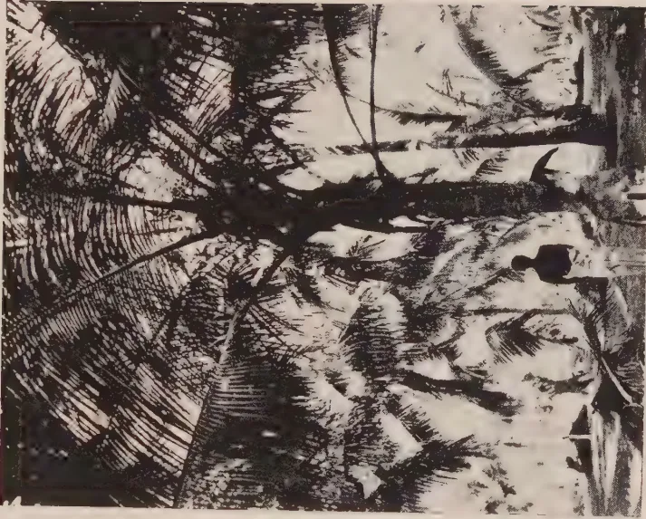
Shews a fine strong tree in the same part of the plantation attacked at the base where the beetleing coolies have been cleaning out the grubs and lime washing the part.
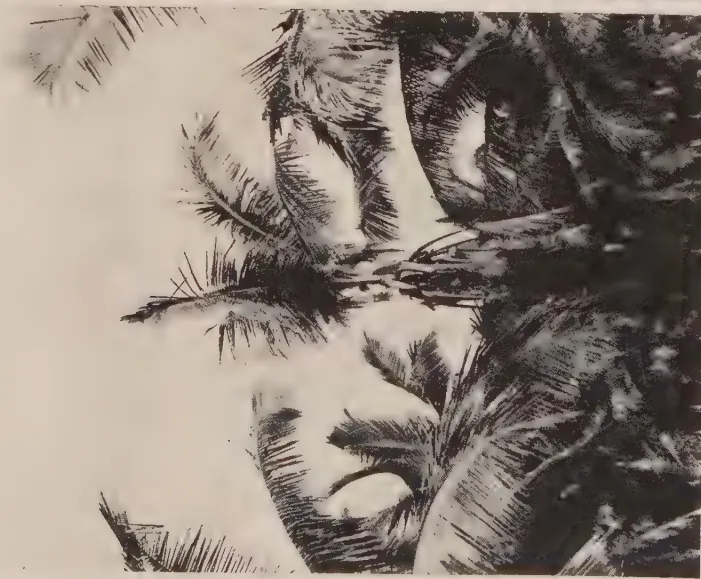
Shews a fine bearing tree attacked at the top of the stem in the growing part or "cabbage".
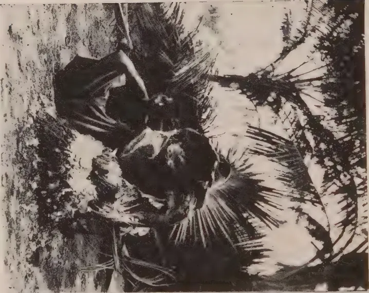
The grubs had worked down into the very base of the stem and after hours spent in digging them out the huge stem has gone over disclosing a mass of soft matter below.
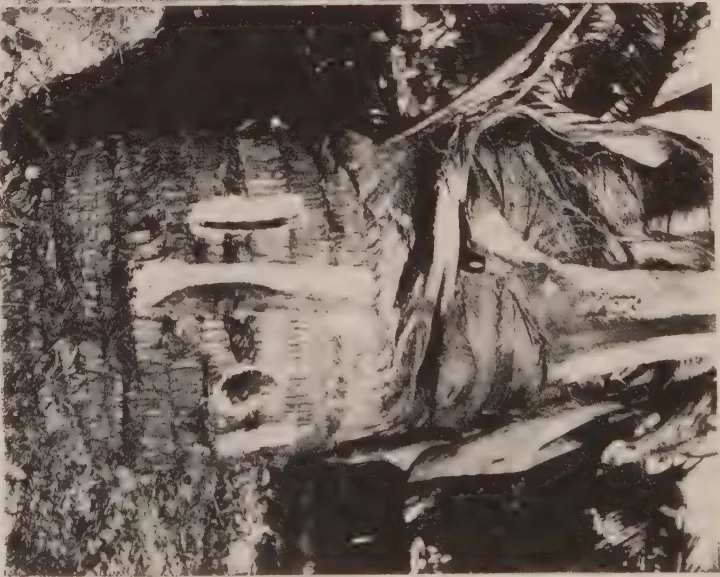
The weevil deposited her eggs in this fine young stem through no wound or abrasion but simply through the outer corneaceous tissue because the stem was soft and full of sap.
JULY, 1917.]232. The larvæ or caterpillars of the Rhinocerus beetle feed on dead or decaying vegetable matter including decaying coconut stems; but the larvæ of the Palm Weevil cannot live on such dead and decaying matter but must have living or fresh tissue, preferably the sappy interior of coconut stems, and sometimes the whitish base of the leaf stalk.
3. Coconuts are rarely killed outright by the Rhinocerus beetle so that all one reads about acres of palms being destroyed by this pest is incorrect; although in one particular, i.e., by affording a means of ingress to the palm weevil they may be classed as destructive. The palm weevil, however, once it has gained access to the inside of the bark, or the leaf sheath, or the crown of the tree, will generally, unless quickly stopped, pursue its course until the tree is killed outright, which often occurs within the course of a few weeks.
Some Observations. The observations I have been able to make in a quiet way spreading over some years in different countries have shewn me that it is dangerous to base conclusions upon impressions formed from experience of one or two places only. Anyone of the above generalities may possibly be upset by further experience but as far as I can find they are generally correct.
The ingress of the pest to the tree is not limited to wounds. Any soft part of the trunk in which the female weevil can insert her long ovipositor is sufficient. A common position to find them starting is under the edge of projecting bark at the base of trees planted too near the surface or on land which is very wet at some period of the year. They will also start in the crown of the stem or cabbage at the top particularly, as previously mentioned, in former wounds left by the black beetle.
When coconut trees make rapid growth on rich soils and the stems are full of sap and often bulbous in shape the weevil grubs will often be found to have started in any part of the stem even where there is no sign of any wound.
To put it briefly one may find trees attacked both top, bottom and middle or in any stage of growth although attacks are certainly much less frequent in hard old stems.
I have myself infected a tree by tying the mature females encaged in a ventilated tin, to the whitish part of the trunk underlying a removed leaf stalk, shewing that this is truly a dangerous practice—i.e., removing the leaf stalk before it is ripe as some people do who wish to have a particularly clean-looking field above all else. With regard to the period of transition of the insect which, so far as I am aware, has not yet been absolutely determined, though it should be easy enough for anyone with time for such experiments to do so, I may say that I infected this particular tree in order to shew its effect to a visitor to the plantation. He arrived ten days late, with the result that the pest had gone so far that I had to cut out half the middle of the tree to get out the grubs which I should say were about half size.
Remedial measures:—I may say that I wasted a long time in pursuing the carbon-bisulphide idea of destroying the grubs. The futility of this as a general means of destroying them is now clear to me.
When it is recollected that of the visible and outward signs of the presence of Weevil grubs in the tree in the early stages of its deadly work the exudation of a reddish liquid resembling that caused by leaf disease is the first, or in more mature wood the exudation of reddish dust (not to be confused with the red fibrous matter thrown out by black beetles), such evidences are not apparent until one or more grubs have attained considerable growth, and by that time there are generally others which have gone up or down right into the heart of the tree starting with a minute hole the size of the egg from which they are hatched and gradually enlarging as they themselves grow.
24[JULY, 1917.Bisulphide of carbon, even if considerable quantities are used, takes a long time to penetrate and by the time it reaches a few inches is generally gasified.
I have myself used a half pint bottle of the stuff injected into holes made in the stem of a tree at various points in and above where the grubs were, and have generally found on cutting down the tree afterwards, numbers of the grubs working merrily away at varying distances from a few inches to as many feet from where the injections were made.
I used up with some trepidation a considerable amount of arsenic ; sodium sulphite ; hypo-sulphite ; and epsom salts in like endeavours to find some substance inimical to the alimentary welfare of these voracious grubs, without any positive indications of success, although one "Beetler" expressed his partiality for the former because I was rather sparing in dealing out sufficient quantity for him to kill all the dogs in the place with.
Personally I am inclined rather to preventative than curative measures, for cures are apt to be looked on as complete while all the time the invisible cancer is imbricating stealthily only to reappear in another place, possibly entirely escaping the owner's attention until one day another tree suddenly droops and is then found to have been harbouring grubs some of which may have already pupated, hatched, and flown to spread their progeny elsewhere.
I could shew, in common with many others, many a tree which in some previous stage of its existence has had every grub carefully scavenged out of it ; its bowels so dissected in the operation that one wonders how the remaining few inches of exterior can possibly supply the sap necessary to that enormous crown. Such mutilated stems are however for weeks a source of danger, for unless carefully covered over every exposed wound is extremely attractive to other weevils which either by smell or instinct or some fifth unfamiliar sense appear to spot them as a dog does partridges. In one case when returning at sunset I passed a tree upon which the beetleing cooly had been working with his long chisel chipping out the interior and following the wake of every grub as a surgeon probing a deep wound for a hidden bullet, I stopped to put fire to the heap of stem chips lest he perchance should have left some pupæ undestroyed ; and while doing so I saw a female Weevil fly to and alight on the wounded stem of the tree literally under my very nose,
Tarring the exposed wound I have found to be less effectual than filling with lime mortar, though both crack to a certain extent when dry and allow ingress of persistent weevils.
I have found preliminary spraying with paraffin emulsion and afterwards stopping with lime effectual when done under careful supervision, but the beetleing coolies will often leave a dissected tree improperly filled the last thing in the evening, and eggs deposited that night may then be merely protected by after filling only to necessitate in another week or fortnight's time a further digging out.
These mutilated stems are generally the first to fall down in a high wind, and it is questionable whether it really repays one to spend so much labour on constantly watching them after all the hours spent on chipping out the larvæ filling in with tar or lime and propping them up. After all they are still a source of danger.
The utmost care should be taken to see that no stems remain in which the weevils may be lying in the pupal stage.
I have seldom been through a villager's plantation without finding one or more such stems literally infested with the insect in its pupal or dormant stage and yet no action has been taken to enforce the clearing up of these harbours of refuge to one of the worst pests in the Island.
E. BRAND.
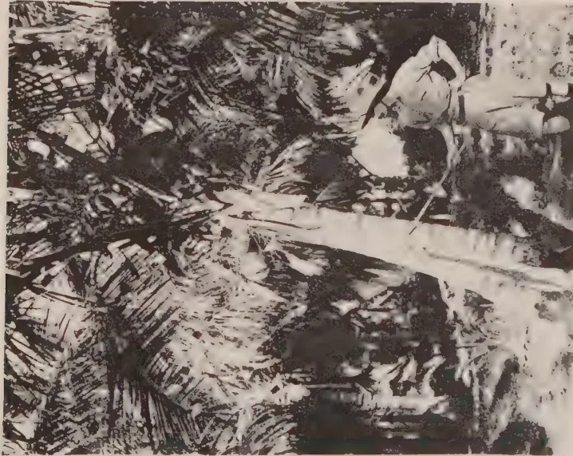
Pointing out the height to which the grubs are reached working from the bottom where the outer bark has been scraped away to find the point of entry or point where the eggs were deposited and the grubs entered when hatched. This is the most common way i.e. from below upwards.
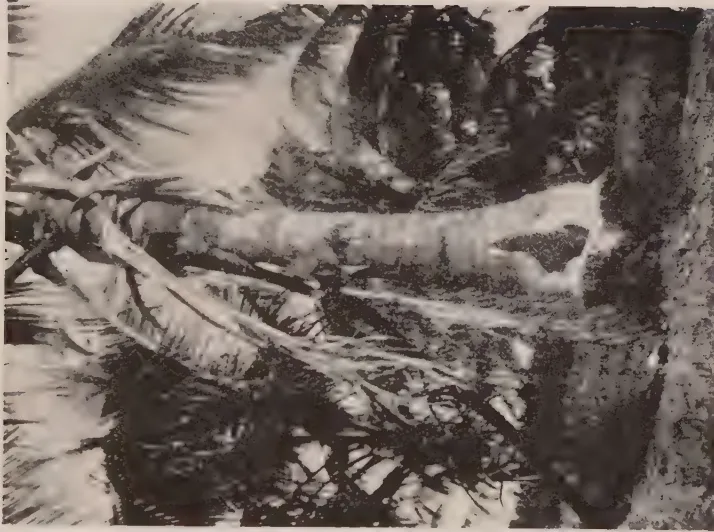
This fine young tree has been so dismembered by the beetleing coolies in their endeavours to dig out every grub of the red weevil that the lower part of the stem is merely a thin shell and it has to be propped to prevent falling but still it lives and grows a large crown though such trees are a danger through being so liable to re-infection.
This image is a scan of a blank page. The paper has a light beige or cream-colored tint. There are a few very small, dark specks scattered across the surface, which appear to be scanning artifacts or dust particles. No text, lines, or other markings are present on the page. JULY, 1917.]25The following species of Helopeltis occur in Java : Helopeltis Antonii Sign., H. theivora Waterh., H. cuneatus Dist., and H. Cinchonæ Mann.
The principal enemy of the tea in Java is the main type of H. Antonii Sign.
At an altitude of more than 4,300 feet a variety of H. Antonii is found, formerly described as H. Bradyi; it can be considered as a local variety of H. Antonii; it differs from the type in some morphological characteristics and in the biological peculiarity of preferring generally Chinchona to Tea. Tea is rarely attacked and never in a severe way. This variety is preliminarily called H. Antonii varietas Bradyi.
H. theivora, which is the most dangerous enemy of tea in British India, does not do much harm in Java : in West Java it has only been found in the low lands.
H. cuneatus, a species new for the fauna, does not attack tea and has been found only on plants of the family of Araccæ.
H. Cinchonæ, however, a second species new for the fauna, of Java, has lately been found to attack tea and possibly it will grow more dangerous in future.
Apart from the scientific descriptions a simple table for the use of the tea planters has been added. The biology of the different species has been dealt with in detail. There is a rather important difference in the duration of the developing stadia of Helopeltis Antonii according to the altitude at which they are found. So the eggstadium of H. Antonii at an altitude of 800 feet lasts 7 to 8 days, at 3,600 feet 8 to 11 days, at 4,200 feet up to 14 days according to the temperature. The larval stadium at 800 feet lasts 10 to 14 days, at 3,600 feet 13 to 24 days. The time covered by a generation at 800 feet is 19 to 22 days, at 3,600 feet 23 to 35 days. The females lived up to 50 days. The highest number of eggs produced in 34 days was 235.
The probable cause of the damage to the tea leaf is subject to discussion ; the spots are considered to be caused by a poisonous excretion. Several experiments have been made, to determine the average damage which can be done by the larvæ and the adults. A calculation shows that the offspring of one female can spoil in six months about 2'8 milliard K.G. of tea leaves ! The habits of larvæ and adults are dealt with in detail later in this book.
* Voor de correctie van deze "Summary" zijn wij veel dank verschuldigd aan de HEERAN J. C. VALETTE, Hoofdadministrator der onderneming Domas (Pamanoekanen Tjiasemlanden) en N. DE FORGES GARLAND, Secretaris van de Pamanoekan-en Tjiasemlanden, te Soebang.—(S. L.)
26[JULY, 1917.The biology of H. theivora and cuneatus has also been worked out, H. theivora shows in many respects much similarity to H. Antonii. One generation lasts at an elevation of 800 feet (Buitenzorg) 28 to 32 days, the highest number of eggs obtained from one female was 172. The biology of H. Cinchonæ could only partially be studied. The incubation period of the eggs at 4,200 feet lasts 18 to 19 days. At this altitude a generation will last, probably, 5 to 6 weeks. The appendages of the eggs of H. Cinchonæ are described as being different from those of H. Antonii and theivora, while those of Cinchonæ and cuneatus are rather similar.
Because other insects are often confused with Helopeltis, a short description and illustrations are given of some of those insects, in order to prevent the planters from being deceived by the natives who have the task of collecting the Helopeltis.
Out of the supposed enemies of Helopeltis the Mantids have to some degree been studied. Though some species eat Helopeltis or its larvæ, they are not of practical importance, nor can the Reduviid: Sycanus collaris F. be considered to be an important check to the pest. As regards the use of spiders in suppressing the pest, no proof of their practical value could be obtained. An experiment was made in importing spiders from Europe. Though the import itself was successfully accomplished, it is still not yet certain, that the spiders gained foothold in the tea gardens. The value of ants as enemies of Helopeltis is discussed in this paper; in tea gardens, they cannot be used for that purpose. Experiments with egg parasites of other Rhynchota on Helopeltis eggs failed. A species of a Bacterium found on a dead Helopeltis was successfully brought into culture by DR. BERNARD, but the results of the experiments on Helopeltis were not very convincing as to its practical value; experiments with the insectivorous fungus Metharrhizium had better results, but much cannot yet be expected from it.
The influence of the environment on the most important species, H. Antonii, has been studied in detail. It was found that the attacks were in general—though not always—most serious in valleys, on slopes of hills and at the edge of jungle and other wind barriers. It could not be observed that shade had any influence upon the pest. The often serious attacks at the edge of wind barriers could only be explained by the theory of accumulation of the insects by the wind of these sheltered places because the insects have only a very weak power of flight and are unable—as has been shown by many experiments—to fly even against a slow wind. Belts of trees planted in order to keep the insects off the gardens are therefore considered as worthless and, in some cases, even as being dangerous, as the insects are liable to be heaped up at the windside and can destroy the gardens there in a very short time, in one case success was obtained by cutting down such a barrier of shrubs and trees, allowing free entrance to the wind.
JULY, 1917.]27As regards the influence of climatic conditions on the pest, an enquiry, made on 57 estates, proved that drought is—generally speaking—fatal to the insects. In 44 cases the attacks were most serious in the west monsoon, in 8 cases in both monsoons; in only 5 cases in the dry monsoon. The last mentioned cases are not yet explained.
Many efforts were made to find the original food plants of H. Antonii in the jungle and the forest, but without success. There is also no evidence that Helopeltis spends the dry time in the jungle. It is, though seldom, found in the tea in the dry season as well. It is therefore advisable, as their numbers generally decrease materially in the dry time, to exercise a strict control on the catching of the few surviving insects in the dry time.
The experiments and investigations did not show anything new about the immunity of the different tea varieties in Java. All varieties are attacked; the so called Java-China-tea is however most liable to attacks. By some planters it was considered that this variety could be useful in attracting Helopeltis, keeping it away from the more valuable tea varieties, but the present author considers keeping China-tea in the neighbourhood of Assam tea as dangerous. Gardens of the former species are often neglected and act as breeding places for the insects.
The tea planters in Java hitherto distinguished two different Helopeltis species: one for cinchona and one for tea. This has been proved to be incorrect. Up to 4,300 feet the same species is found (H. Antonii Sign. main type) both in cinchona and in tea, but at an altitude of more than 4,300 feet the variety Bradyi is found and this insect prefers generally Cinchona. The present author considers therefore the neighbourhood of cinchona under 4,300 feet as a danger and a menace for the adjacent tea. This view is supported by the fact that Helopeltis cannot be combated in cinchonæ unless the plantations are very young while also the insect can multiply on this plant to a nearly unlimited extent. A practical method of decreasing the danger as much as possible is to do cultivation work in the Cinchona plantations—cutting and hoeing—before the adjacent tea-gardens are in a condition most susceptible to Helopeltis attack. An elaborate investigation has been made of the food plants of Helopeltis Antonii and theivora especially of the weeds, occurring in the tea-gardens, and of the leguminous plants used for green manuring. The following species of leguminous plants are badly attacked by Helopeltis under laboratory conditions: Albizia moluccana Miq., Erythrina indica Lam., Tephrosia Vogelii Hook., Tephrosia Hookeriana W. & A. The insects can live on these plants for several weeks. The leguminous plants are not always pruned at the same time as the tea, it is however advisable to prune or cut the species of leguminous plants on which Helopeltis can live, at the same time as the tea. The insects have been bred entirely from egg to adult on Albizia moluccana and Tephrosia Vogelii. The latter is attacked in a most serious way in Central Java, where it is planted as a temporary shade plant for cocoa. Helopeltis Antonii could not live on Leucaena glauca Bth. and Clitoria cajanifolia Bth. Shrubs, which must be
28[JULY, 1917.considered as dangerous foodplants are: Bixa orellana L. and Gardenia florida L. which are often used as hedge plants. Weeds, which were attacked under laboratory conditions, and on which Helopeltis lived for a considerable time, are: Richardsonia brasiliensis Gom., Melastoma malabathricum L., Erigeron linifolius Willd., Bidens pilosa L., Dichrocephala latifolia (Lmk) D.C., Erechtitis valerianæfolia D.C. Also in the tea gardens damage by Helopeltis was observed on these plants principally when the tea was pruned low. These experiments and observations lead to the general conclusion, that it is advisable to weed quite clean very soon after (under certain circumstances before) pruning in order to prevent the insects from remaining on the weeds, until the tea-shrubs have buds again. Some Bamboo species have been subjected to feeding experiments. Awi tali (Bambusa apus) must be considered as suspect, because the insects remained living on this plant for 10 days. On Casso (Saccharum spontaneum L.) Alang alang (Imperata arundinacea Cyr.) the insects died within 2 or 3 days; these grasses therefore can be considered as not suspect. In light secondary wood, some plants were found spotted; as if they had been attacked by Helopeltis; the damage however was not due to Helopeltis but to another bug of the family of Capsidæ: Pachypeltis vittiscutus Bergr. The plants affected are the following: Villebrunea rubescens Bl., Leea æquala L. Arthrophyllum diversifolium Bl and a Sauramia spec.
Both H. Antonii and theivora, can be considered to be very polyphagous.
A plant (to be used as a bait plant) more liable than tea to Helopeltis attack could not be found.
The chapter dealing with the remedial measures against the pest opens with an example showing what great damage can be caused by Helopeltis. This may be an indication that it is always advisable to combat the pest and never to leave it alone. After a review has been given of the position of the present question in the British and Dutch East Indies up to the present investigations, the connection between the pest and the cultural methods in the tea in Java is discussed. This study is entirely based upon facts communicated to the present author by the planters and upon what he has seen himself on his visits to about 40 estates, of which several have been visited repeatedly. This investigation was necessary before a plan for experiments could be made.
No definite opinion could be formed whether forced plucking had any favourable effect. The results were sometimes satisfactory, more often not. Experiments are necessary.
Leaving alone the attacked gardens (no plucking, no fighting against Helopeltis.)
This practice must never be adopted at the beginning of an attack. Everything must be done to decrease the number of the insects. Even in the second year after pruning combating must be carried through as far as it is possible. Leaving the gardens alone to the pest must be avoided; the present author has seen the bad results of this policy at many estates. There are cases in which the pest disappears without any remedial measure, this happens f.i. as a rule in course of the dry monsoon, but in the other season there is no reason to expect this phenomenon to happen and as a rule the pest will grow more and more serious if nothing is done.
JULY, 1917.]29The idea of some planters, that the tea would become immune after several attacks, has no sound foundation. The cause of the spontaneous disappearance of the pest in some cases can, as far as the present author can see, only be due to lack of food, removal of the pest by the wind or special climatic conditions.
Pruning is often tried to get rid of the pest, but it is often forgotten that this measure causes a migration of the insects which may become very fatal in case there are newly pruned gardens adjacent, where the tea is in weak condition consequent upon pruning. In this case pruning must be delayed, until the danger has decreased. If low pruning must be done, it must be taken into account that pruning of small plots is to be avoided. Pruning of large areas (say 40 bahoes in one month) will delay re infection for a longer time. Because the insects are carried in the direction of the prevailing winds, it is advisable to prune the gardens with the wind and never against it.
When low pruning is done, the method of leaving weak shrubs unpruned is not advisable, these shrubs being a shelter to the insects until the pruned shrubs are sprouting again. If this method cannot be avoided, such shrubs must either be sprayed with soap solution or carefully examined on remaining Helopeltis. Agreement about the time of pruning between adjacent estates is strongly advisable.
Many facts, communicated by the planters, and many facts the present author has observed himself, give strong indications of the preferability of high and middle pruning to low pruning in case of a Helopeltis attack. It is probable that high and middle pruning is to be recommended for estates which still suffer seriously from the pest. The objection of the planters, that these methods of pruning give lower production must be considered as questionable. Experiments on estates of different altitude are strongly advised.
The daily destruction of the prunings of an infected garden is to be recommended in the rainy season. In the dry season destruction of the prunings is not necessary, provided they are spread in thin layers.
The influence of manuring and of different methods of cultivation has not yet been studied. Experiments about these questions are required.
Weedy gardens are as a rule not more attacked than clean gardens.
The following measures must be considered to be of no value.
(1) Fumigating the gardens with smoke of burning detritus, whether mixed or not with sulphur; (2) Fumigating the shrubs individually with sulphur cartridges; (3) scorching the shrubs by means of soldering lamps.
The following measures are to be considered as valuable for combating the pest:—
1. Plucking the twigs which contain eggs. When this measure is applied, it must be carried out in such a way that the eggs are collected before the larvæ have hatched.
2. Catching Helopeltis by hand. This can be considered as being often very effective, but it has to be started as soon as the first damage has been observed. For this work a system of keen control is necessary; the planters must be warned as soon as the first symptoms have made their appearance.
30[JULY, 1917.Timely intervention will often prevent much damage. Hand catching is already regularly applied by most of the tea planters in Java. It was confirmed by the present author that most of the larvæ are caught early in the morning, most of the adults later in the morning, but it is still advisable to let the people catch the insects the whole day through, if possible.
3. Spraying experiments were made with different insecticides. It was proved that the eggs are so well protected by the plant tissue that insecticides, even in a solution strong enough to kill the plant, do not kill all the eggs. The egg stadium therefore cannot be combated by spraying. The larvæ and adults are killed by spraying with a 2% soap solution. Spraying proved to be much cheaper than hand-catching. Experiments proved that spraying can be successfully applied at a date later than about seven months after low pruning. After that time the foliage of the shrubs is too dense for an effective spraying and makes it too expensive. Spraying must be started after pruning as soon as damage has been observed. The first damage is often caused to the buds of the sprouting shrubs, a keen control is therefore very necessary. Only the shrubs which show damage must be sprayed and the measure must be repeated before the larvæ, which hatch out of the eggs, can reach maturity, therefore this means that spraying is done every 9 to 14 days according to the altitude and the seriousness of the attack. Combined methods of spraying and hand-catching can be applied as well. These methods gave very good results. A surface of 160 bahoes was for 97% kept free for seven months at a cost of about 2f. a bahoe per month.
The principal precautions and remedial measures can be summarized as follows:—
1. Immediately after pruning the shrubs must be sprayed with a 2% soap solution.* This can, in favourable circumstances, be continued for seven months; after that time handcatching must be applied.
2. Weeding must be done at the same time as pruning or immediately after pruning.
3. The leguminous plants, which have been proved to be dangerous host-plants, must be avoided; in case they have been planted they must be pruned at the same time with the tea.
4. Dangerous hedge plants such as Bixa orellana and Gardenia grandiflora must not be tolerated in the neighbourhood of tea gardens.
5. In case of prevailing winds, pruning must take place with the wind and never against it.
6. In the rainy season the prunings must be destroyed the same day; in the normal dry season it is not necessary, provided they are spread out in thin layers.
7. If tea is grown near Cinchona at an altitude lower than 4,300 feet, pruning of Cinchona and other cultural methods which can cause migration of the pest from the Cinchona to the tea must be done before the adjacent tea gardens are pruned.
*Spraying can also be combined with hand-catching.
JULY, 1917.]318. Pruning of small plots is not advisable. The larger the area pruned in the shortest possible time, the longer the period that the gardens will remain free from the pest. Speaking generally, pruning of 40 bahoes per month at least is advisable.
9. If accumulation of Helopeltis takes place at the edge of the forest or at similar places, it is advisable to cut down the whole complex of wild plants which acts as a belt.
10. Adjacent estates have to make agreement about the time of pruning in order to prevent one estate from being infected by the other.
11. Collecting twigs which contain eggs is advisable, provided the developing period of the eggs is taken into consideration.
12. In fixing the intervals between two successive gangs of spraying or hand-catching, the developing period of the larvæ must be taken into consideration.
13. Do not stop the fight if there are only a few insects; also start fighting as soon as the first insects are reported. A premium system to encourage careful control and searching is advisable, in such a way that the mandooras get a premium in case they succeed in keeping the gardens free.
14. Do not prune badly attacked gardens; if newly pruned gardens are adjacent, better leave them alone until the number of insects have decreased or the pruned gardens are no longer in a weak condition.
15. Leaving the gardens alone must in other cases not be practised. As nobody can say beforehand whether a newly started attack will spontaneously disappear or not, fighting the pest, at any rate in the beginning, must always be advised.
16. It must be avoided to let the pest grow serious before employing remedial measures. These have to be applied as soon as damage of Helopeltis is detected. Fighting the pest by hand-catching or spraying after it has grown very serious must be regarded as throwing good money after bad.
It is further considered necessary to go on experimenting on the following questions:—
A. The relative value of deep, middle and high pruning in the fight against Helopeltis; experiments have to be made at different altitudes.
B. The effect of leaving alone and of high pruning in case a field is seriously attacked;
C. The effect of forced pruning.
D. What measures can be taken against infection from native gardens?
E. The liability and resistance of varieties and individuals of tea.
F. The influence of different fertilisers on the pest.
The help of the planters for these experiments is urgently required. The experiments cannot be made in small experimental gardens and only on the estates.—BULLETIN 26, INSTITUTE FOR PLANT DISEASES, Department of Agriculture Java.
32[JULY, 1917.The first reported outbreak of this pest took place in November and December, 1904, when it did a great deal of damage to the paddy crop in Jaffna. Smaller outbreaks took place at the same time in the Hambantota, Matale and Neboda districts. The Jaffna outbreak was visited by GREEN, who reported on it in the TROPICAL AGRICULTURIST, February 1905, and figured the larva, pupa and adult of the insect.
In November, 1905, an outbreak was reported from Kayts. The same month in 1906, the pest was reported from Mullaitivu, and from the Walawe District in December.
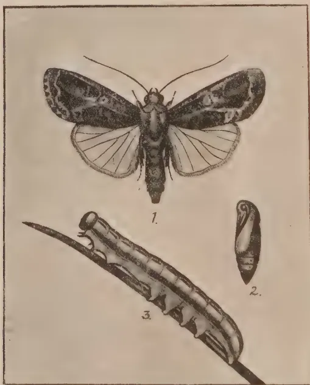
THE SWARMING RICE CATERPILLAR.
(after GREEN).
1. Moth 2. Pupa 3. Caterpillar
Since that time, to judge from the official records of the Government Entomologist, the pest has been practically quiescent until the present time, when it seems to have suddenly increased once more into a serious and widespread outbreak; reports of infestation of paddy fields having been reported from Tamankaduwa, Kurunegala, Rambukkana, Pilessa and Giants Tank. It is singular that the pest should suddenly and simultaneously make its presence felt after so many years quiescence in so many diverse localities and it is difficult to offer any satisfactory explanation of this phenomenon. Possibly the climatic conditions at the present time have something to do with it.
With regard to the suggestion of control-measures, little can be offered beyond the suggestions and recommendations made by GREEN in the above-mentioned paper. The paddy cutworm is an "army-worm"—that is, when
JULY, 1917.]33its numbers increase in any locality owing to favourable conditions, to a point where its food-supply becomes exhausted, the caterpillars migrate in swarms over the ground in search of fresh fields, which, when found, they speedily wipe out of existence. It is this tendency to migrate, which, as in the case of the migratory locusts, renders the pest so much to be dreaded by the poor cultivator, and therefore the obvious course to take in case of an invasion by these caterpillars is to place such obstacles in their path as will serve to prevent their getting into cultivated fields. In Ceylon, the best way in general to do this is to dig trenches round the fields adjacent to the outbreak. These trenches should be steep-sided at least on the side nearest the cultivation which it is desired to protect. The migratory hordes of caterpillars fall into the trenches where they may be killed.
When a field is already infested with the cutworms, practically the only effective course is to flood the field and then so to disturb the caterpillars as to cause them to fall off the plants into the water. This disturbance may be effected by dragging ropes, stretched between two men over the paddy. In some places in India it has been found that crops could be saved by merely disturbing the caterpillars in this way two or three times a day so as to worry them and prevent them from feeding.
In the Report of the Travancore Department of Agriculture, for 1914-15 the following appears:—
" This pest was reported from three localities in October, 1914 and in March and April, 1915, respectively. The Entomology Assistant visited these localities and rendered help to ryots in combating the pest. In one place the insect was killed by spraying the crop with lead chromate and in the other places the following method was adopted. Water was led into the affected fields to a depth of 10 inches, kerosene oil at the rate of four bottles per acre was sprinkled over the water and a long bamboo pole was dragged over the crop with strings attached to both ends. This method, it is reported, is cheap and at the same time efficient in dealing with the swarming caterpillar."
The paddy cutworm feeds upon various wild grasses and is not dependent on paddy at all. Under normal conditions it exists in small numbers in neglected grass-lands, and it is only when the conditions become favourable that the insect becomes a serious pest. From this it will be seen that it is extremely important that all grass-lands adjacent to paddy fields should be carefully watched and looked after in order to prevent the cutworm from increasing unduly. As the moth lays its eggs in batches on grass-blades, and as the caterpillar hides by day and pupates underground, it would be well if such grass-lands could be ploughed over so as to bury most of the eggs and expose the caterpillars and pupæ to the crows and mynahs, before planting of seed paddy begins.
As the caterpillars appear to eat only young paddy, the damage could possibly be prevented by growing seed-paddy in nurseries protected by ditches full of water, and transplanting so soon as the plants are big enough to resist the attack.
G. M. HENRY,
Assistant Entomologist, Dept. of Agric.
34[JULY, 1917.(Continued from Page 364, Vol. XLVIII.)
Shallot (Allium ascalonicum). Often called onions. The Rataloonu of the Sinhalese. This is propagated by small bulbs which should be planted preferably in raised beds 6 × 6 inches. Same kind of soil and treatment as for onions. Where possible irrigation should be adopted in preference to watering when cultivated extensively.
Yield depends on the soil, climate and methods adopted in the cultivation and may be anything from 15-40,000 lb. per acre. About 750-800 lb. of bulbs will plant an acre. Shallots are largely employed in eastern cooking for which they are indispensable. We have to depend on India for our supplies. This can be successfully grown over a large area in Ceylon. Encouraging results have been obtained in Welimada and Pālugama.
Garlic. (Allium sativum) Sinhalese Suduloomu. A more valuable crop than shallots and much used in the preparation of curries and for its medical properties. Is cultivated and treated like Shallots but is not extensively grown even in South India. Rarely grown in Ceylon. 500 to 750 lb. of bulbs will plant an acre and yield from 8 to 10,000 lb. Current market price is -/30 cents but the price is rising and may go up to -/50 cents. The bulbs found in the bazaars can be used for seed.
Aniseed (Pimpinella anisum). The seeds are used in confectionery and distillation for oil. It is easily cultivated. Sow seeds in drills a foot apart and thin out when plants are well established to a foot apart in the drills. After cultivation consists of weeding and watering when necessary. A good quantity of seed has recently been distributed.
Turmeric (Curcuma longa). Propagated by planting sections of the rhizomes. Needs a deep fertile, well-drained soil. Sand and clay soils are not suitable. Plant sections a foot apart. In Harris Pattu—where a fair amount is grown and the planting is done in April and May—the crop occupies the ground for nine months and should be raised when the leaves have completely withered. An acre will yield anything between 12 to 20,000 lb. of fresh roots which when cured will be reduced by about 75% in weight. Fresh tubers sell locally at 6 to 8 cents per lb. and the dry stuff in the boutiques from 25-30 cents per lb. I recently visited several gardens, where turmeric is regularly cultivated. In no place did I see it extensively grown. A villager who has a small plot of it, less than acre, makes about Rs. 60 per annum. Turmeric could be grown both at low and high elevations and being so largely used commands a good market. For good results green manures should be used. The following is the method of curing turmeric:—
Remove the adhering earth from the roots. Put the roots into a vessel and add sufficient water to cover them. Having covered the top of the vessel boil the contents slowly for about 3 hours. Then spread out in the sun till dry and finally remove the outer skin either by hand or by treading under foot.
W. MOLEGODE, S.A.I.
JULY, 1917.]35C. HAYES.
In a recent issue of Eastern Engineering reference was made to a report by the American Consul, in Saigon, French Indo-China, in which attention was drawn to the importance of that country as a rice growing and rice-milling centre, and pointing out that, in addition to there being some nine large rice mills now controlled entirely by Chinese companies, in that part of Indo-China alone, there is room for the development of this industry by the installation of small up-country mills, a few examples of which have already been supplied and set to work with most satisfactory results.
Particular reference was made in that report to one of these small mills which is in operation at Mytho, on the Mekong River, and we are interested to learn that the small mill referred to was built and supplied by MESSRS. DOUGLAS AND GRANT, LTD., of Kirkcaldy, Scotland, who mention that, in addition to being the oldest established makers of large rice mill machinery in the world, they are makers of all the most modern machinery of this class for French Indo-China, Burma, India, and all rice-growing countries.
Before leaving the matter of the American Consular report, we may say that there are ten large mills in the Saigon district, and of that number eight were built and equipped by the Scotch firm in question, who also built and supplied the engines, boilers, and power plant generally for the other two mills, which were of German construction.
The process of rice milling is a most important one, requiring highly specialised machinery for the shelling, cleaning, grading, and polishing of the grain; and owing to the wide variations in the character of the rice grown, not only in different parts of the world, but even within relatively narrow limits in the same territory, expert knowledge and long experience are necessary for the selection of the most suitable design of machinery. A certain type of machine, which may be most successful in Burma, for instance, may not be suitable for Siam, simply because of the difference in the original grain; and again the market for which the rice is ultimately destined affects the machinery required for the later stages of milling to a very considerable extent.
The essence of good rice milling is generally to obtain the maximum proportion of whole, well cleaned, white rice from the paddy or unhulled rice supplied to the mill, together with the automatic separation, grading and dressing of the broken rice and by-products obtained in the process.
Milled rice may be roughly divided into three classes, viz.
Cargo Rice, which is partly shelled and graded, but not whitened, and which is generally exported from the large rice growing countries, such as Burma, and imported by Europe to be further milled into fine white polished rice fit for high class European consumption.
Europe Rice, so called, which is high-class rice, milled as such in the East and exported into Europe, also to be finished there; and
Straits Rice, which is not finely finished and is sold locally for native consumption.
36[JULY. 1917.The fact that highly-milled and polished rice does not carry well in the hold of a steamer is responsible for the establishment of the rice finishing and polishing industry in many important seaport towns, not only in Europe, but in the colonies; there are large establishments dealing exclusively with the finishing of rice in London, Liverpool, Bremen, Hamburg and Holland, Marseilles, Trieste, as well as in Montreal, Sydney, and other large ports. This is a highly specialised branch of rice milling requiring the best available machinery for its successful prosecution.
The process of milling in the Far East, indeed wherever the grain is grown, may be roughly summarised as follows:—
Millers, as a rule, obtain the grain already threshed, so that the first treatment at the mill is for the purpose of freeing the grain from the inevitable sticks, stones, and mud which it contains in more or less marked quantities, according to locality and purveyors. After the preliminary cleaning the grain is shelled by revolving discs or hullers, after which the free husk is winnowed and collected, being a most valuable fuel. Most rice mills having an output from one ton per hour upwards are driven by steam engines, the boilers supplying which are fired entirely by the husk produced in the milling process, a specially designed step grate or husk furnace being used for this purpose. The husk produced by large rice mills is much in excess of what is required for steam-raising purposes, and in many cases the surplus is either burnt or thrown out on the rivers on which many of the most important mills are situated.
In the case of mills having but a small output, oil engines, or, where convenient, electric motors, furnish the motive power; the burnt husk has a definite value as a fertiliser, and in jungle or up-country mills this point is important. The winnowed or husk-free grain is then separated, so that the unshelled grain (there is always a certain proportion of this owing to irregularities in the size of the individual grains) is returned to the hullers to be shelled while the hulled grain is ready for the next process, unless cargo rice only is desired.
The whitening of the shelled grain is most important: while certain grain presents a yellowish-white appearance after shelling; certain grain, as, for example, in parts of Burma, Madagascar, Indo-China, and India, is of a deep red colour underneath the husk. This inner skin adheres closely to the grain, and can only be removed by a thorough process of attrition, which must be carried out with great care and by specially designed machines if undue breakage and consequent loss is to be avoided. This whitening or pearling process is perhaps the most important and difficult of the whole milling business, because it is not only desirable to produce whole white rice; but the rice produced must be as clean and free from particles of meal and dust as possible. The degree or whiteness and finish and freedom from broken grain determine the class or quality under which the rice can be sold and the market value thereof, and hence the commercial value of the mill.
JULY, 1917.]37If desired, the pearled or whitened rice is then passed through special polishers in order to give the surface of the rice a pearly finished appearance, as well as to remove meal or dust.
Grading plays an important part in large rice mills, having an output measured in hundreds of tons per day, and in such mills this process involves the employment of considerable batteries of machines over which the rice is passed in order not only to separate out the whole rice, but also to subdivide the broken rice into various degrees or classifications; the smallest broken grains may be ultimately ground for the production of rice flour.
The meal which is given off in the pearling and polishing process is a valuable animal food, and contains, as a matter of fact, much of the most nourishing properties of the whole grain. In this connection it is interesting to note that the disease known as "beri-beri" chiefly occurs among natives who eat highly milled rice without the addition of other foods, such as beans fish, etc., but it does not occur to any extent among natives eating only partially milled rice, nor among those who eat rice, as do the natives of India, which is par-boiled as a preliminary to the milling process. Par-boiled rice is the chief food of millions of natives in India, as well as (chiefly) of Indian natives working in other countries, such as the Malay Peninsula, British Guiana, etc. Apart from the established fact that par-boiled rice does not appear to cause "beri-beri," the finished rice has a peculiar flavour, and is not liable to deterioration on storage to the same extent as white milled rice; par-boiled rice, after milling, possesses a yellowish tinge.
The process of par-boiling consists in steeping the raw paddy (rice in the husk) for a certain time in water at a certain temperature, after which the grain is put into drums or large pans where it is subjected to steaming for a further period. From the drums or par-boiling pans it is taken out and spread over a native brick or hard earth floor and exposed to the direct rays of the sun, being baked over till it is dry.
In the rice-growing districts of Southern India and Bengal there are a large number of small native mills, each provided with its drying ground, which in many cases covers quite a large area; the wet par-boiled rice is spread over, and collected again when dry from these grounds by women and children. It will be seen, therefore, that, quite apart from the sowing and harvesting and threshing of rice, which in themselves give employment to an enormous population in countries where rice forms the staple article of food as well as of export, the rice-milling industry is also one employing a large body of native labour, not so much in the actual mills themselves, but more so in connection with the transport of paddy in native boats, or by rail, to the neighbourhood of the large mills, as well as for the handling and storing of paddy and the storing or loading of milled rice after operations are concluded.
Modern mills, however, employ relatively little labour, because in a well-designed installation the whole milling process is automatic from the time the paddy is brought into the mill until it is bagged off and ready for storage or shipment. The grain after being delivered to the mill passes from one machine to another by suitable mechanical transport, either by elevators, travelling bands, or endless screw conveyors, according to the disposition of the machinery as well as according to the nature of the product dealt with at any particular part of the process. Even the husk, which is separated from the shelled grain by winnowing, is automatically collected and transported to hoppers placed over the specially constructed furnaces into which it falls by gravity. The cost of actual milling labour is thus reduced to a minimum, and it is by careful attention to details of design that the commercial efficiency of a mill can be largely secured.
38[JULY, 1917.Although Burma holds first place as the chief rice milling and exporting country in the world, it is interesting to note that the area of land under cultivation for rice is greater in Bengal than in Burma; but in Bengal rice milling is carried out by thousands of small cultivators, or groups of cultivators while in Burma the industry has been developed by large European firms, some of which may control a number of mills, the individual output of which may range from 100 to 1,000 tons of white rice per day.
The mills in Saigon are comparable as to size but not by any means as to numbers—with those of Burma; but in Siam where the number of mills on the Menam River and its tributaries reaches even a higher figure than in Burma, the size and output of the individual mills is appreciably less. In these three countries, however, there has sprung up in recent years a demand for small jungle mills which can be operated—both from the financial and the milling point of view—by individual natives or by small syndicates of these. This demand ranges from mills having an output of half a ton to mills producing to 2 tons per hour, and it may be of interest to state that MESSRS. DOUGLAS and GRANT have supplied the bulk of such mills ranging from outputs of to 3 cwt. per hour up to 50 and 60 cwt. per hour.
These mills are of the "self-contained" type, which has been the subject of quite special study and consideration by the firm in question who inform us they have sent them to such widely distant places as Burma, Nepal, Southern India, Mysore, Malaya, Siam, China, Indo-China, Java, Madagascar, Brazil, and the Continent of Europe. These small mills are really miniature reproductions of the same makers' well-known large mills, which do by far the bulk of the world's rice milling in the East; and the only difference between the small and the large mills lies in the size and the number of the individual machines employed.
Mills are built of a certain number of standard sizes, and the individual machines are now made to standard designs, so that spare parts are easily obtainable for repairs or replacements, in case of need.
These self-contained mills are erected complete in the makers' works; they are carefully marked to enable re-erection to be carried out on site with a minimum amount of time and trouble; and being, as their names indicate, contained on their own steel framing, and having their own flooring around the higher machinery, they can be housed in any convenient native building with a minimum of expense and labour to the purchaser. Even in the smallest mills separation is automatically effected of whole rice, No. 1 and No. 2 broken rice, meal and husk, and it is to be noted that the product is every whit as good as that obtained from the largest and most expensive European or Chinese-owned mills, in Burma, Indo-China, or Siam.
Where cheapness and absolute simplicity is the determining factor the company supply small machines known as their "planter's mill," of which large numbers are used, especially in India and Java, by the smallest cultivators. The price of these mills is low, and they can be driven by small steam or oil engine; they cost practically nothing to instal, are easily worked by entirely unskilled natives, and give quite satisfactory results both as regards quantity and finish. The output of these machines ranges from 500 lb. per hour without preliminary shelling—that is, if the shelling and polishing process is carried out in the one machine—to over 1,000 lb. per hour if the grain is first roughly husked in one of the maker's shellers, and thereafter finished in their planter's mill. Where larger quantities are required, two or three or
JULY, 1917.]39more machines are put down and driven by counter-shafting from one prime mover, and the results are wonderfully good. Stock and spare parts are carried at the makers' Eastern branches, and these are necessary as the wear and tear of this class of machine is not inconsiderable.
As regards outturn (or proportion of finished product to paddy treated) and finish, however, the results of these small mills do not compare with those obtained from the "self-contained" mills, where not only is the recovery of good and useful grain much more complete, but the breakage of grain is less, and the appearance and finish distinctly superior.
Whether in the case of Planter's mills or groups of these, or of self-contained mills the makers also supply the steam or oil engine or electric motor; boiler plant, including especially constructed step grate to burn rice husk, chimney, feed pump, bricks for boiler setting, together with all transmission belts, etc., electric lighting plant for lighting mill, compound, and go-downs, fire extinguishing and fire appliances—in fact, the complete equipment to enable the mill, whether turning out 2 or 3 cwt. an hour or 1,000 tons of rice per day—to be set to work rapidly, efficiently, and economically.—MYSORE ECONOMIC JOURNAL, May 1917.
The shortage of shipping and the restrictions imposed on exports from England has emphasized the importance of the greater use of the numerous food stuffs and other commodities which are produced in India. This necessitates advertising, and in the first instance probably no better way of doing this can be found than by holding an Exhibition of various edible and other products which are manufactured or prepared in India. It is suggested that these products can and should be used in far greater quantities than at present especially by those who have hitherto relied largely on imports from Europe.
In response to numerous inquiries from ladies who are experiencing the above difficulties in house-keeping, the Women's Branch of the Bombay Presidency War and Relief Fund has resolved to hold an Exhibition of the above character in Bombay provided an adequate response is obtained from the various producers and manufacturers in India.
The following purposes would be served by such an Exhibition, viz :—
It is proposed to comprise in this Exhibition articles such as tinned meats, sausages, sugar, bacon, soap, breakfast foods, jams, preserved fruits, pickles, chocolates, tea, coffee, beer and other beverages, butter, cheese, and other commodities and also household requisites such as linen, glass, china, brushes and brooms. (Notice issued by the Women's Branch Bombay Presidency War and Relief Fund.)
40[JULY, 1917.Dairymen defend any low content of fat in their milk by stating that this is due to a dry season or a shortage in feed. In the light of recent studies this defence is no longer tenable. Results of experiments conducted on goats* show that the effect of withholding food for some time causes the amount of milk secreted to decrease but the percentage of fat increases. If after a period of low feeding an abundant supply of food is given the yield of milk increases but the fat content may decrease to such an extent as to be below that of the normal milk. By the action of drugs which limit the supply of sugar in the blood it is explained that any interference with the sugars and carbohydrates taken in by animals (i. e. whether they are given in excess or in deficiency) affect not only the amount of milk sugar but also the amount of protein and "milk" secreted; the secretion of fat, however, is not to any very great extent affected.
H. L. VAN B.
The Agricultural Society, in view of the rapidly increasing prices of curry stuffs in Ceylon, has made special imports of seeds from India and has arranged for trials in various localities of the colony.
The seeds imported for these trials comprise the following:—Onions, garlic, cummin, coriander, fenugreek, dhall, gram, anise, ginger, turmeric, mustard, kollu, chillies, and lentil.
They are being grown on Experimental Plots at Peradeniya, and Anuradhapura Experiment Stations and on lands belonging to the following gentlemen:—
HON. DR. H. M. FERNANDO, Colombo; HON. MR. J. H. MEEDENIYA, Ruwanwella; HON. MR. O. TILLEKERATNE, Matara; MUDLR. A. E. RAJAPAKSE, Negombo; MESSRS. R. SENIOR-WHITE, Matale; P. B. M. BANDARANAYAKE, Mahaoya; F. L. DANIEL, Colombo; W. A. DE SILVA, Colombo; A. M. DIAS, Panadure; H. L. DE MEL, Colombo; R. C. PROCTOR, Colombo; D. J. ARSECULARATNE, Colombo; DON JOSEPH, Matale; C. D. GOONEWARDENE, Baddegama; M. KELWAY BAMBER; G. PUSSEGODA, Kandy; L. B. WARAKAWALLE, Kandy.
Seeds have also been distributed to villagers and others throughout the colony by the Agricultural Instructors.
* Studies in Milk Secretion. HAMMOND and HAWKE. (Jour. Agric. Sci., viii pt. 2., p 139.)
JULY, 1917.]41Plots are also being grown at the following School Gardens :—
Central Province.
Province of Sabaragamuwa.
Province of Uva.
Western Province.
Eastern Province.
North-Western Province.
North-Central Province.
Northern Province.
Southern Province.
These plots will serve as seed centres from which seed can be distributed after harvesting.
Hints on the cultivation and harvesting of these products are being published in the TROPICAL AGRICULTURIST and a small brochure prepared by the Senior Agricultural Instructor will shortly be ready for the press. This it is proposed to publish in English and in the vernacular for distribution throughout the villages.
42[JULY, 1917.D. CLOUSTON, M.A., B.Sc.,
Deputy-Director of Agriculture, Southern and Western Circles, Central Provinces.
In the West the science and art of education have been much developed of late years: the science has been greatly enriched by the writings of such psychologists as SPENCER, BAIN, JAMES, ADAMS and others. Chairs of education have been established in some of our universities. The great reforms in the methods of education, as now practised, owe much to the teachings of the educationists, of the sixteenth, seventeenth and eighteenth centuries. In the latter half of the sixteenth century MONTAIGNE condemned the pedantries of the schools which, he said, exaggerated memory while they depreciated the value of useful knowledge. RATKE and COMENIUS of the early seventeenth century also denounced the purism of the schools, in which so-called culture and scholarship were synonymous with ability to deliver elegant speeches in the dead languages. The latter was one of the first to lay it down as a principle that the teaching of words and things must go hand in hand. He was, moreover, one of the first advocates of the teaching of science in schools and his method of teaching a language was to teach it as the mother-tongue is taught, viz., by conversation on the topics of every day life. Teaching, he said, should be made interesting by bringing the child into contact with actual things and the pupils should always be kept interested, cheerful and happy. LOCKE in the end of the seventeenth century developed MONTAIGNE's theories still further; he laid great stress on the training of the mind in order to fit a man for the duties of the world. The aim of education was, he said, to produce a sound mind in a sound body. ROUSSEAU in the eighteenth century wrote his Emile: the influence of its revolutionary philosophy was enormous. The child, he said, must be a pupil of Nature. His Emile was taught by the real things of life, by observation and experience: he was to learn nothing from books, much by experience having read deeply in the book of Nature. Like LOCKE he laid great stress on the physical development of the child and on training his hand and eye. The strength and body of his Emile was to be fully developed; and he was to be athletic and good at handicrafts. PESTALLOZZI in the latter half of the eighteenth century still further developed and practised the science of education on more or less the same lines. Like COMENIUS, LOCKE and ROUSSEAU he followed Nature: the child's powers of observation had to be developed by training and his whole mind was to be gradually moulded by sympathetic contact with that of the teacher.
Sympathy was all important in his method. FROEBEL, the mystic and disciple of PESTALLOZZI, like COMENIUS, looked at the course of Nature for the principles of education. The duty of the pedagogue was, he said, to superintend the development of inborn faculties and to encourage self-activity in the child. Just as the farmer provides good cultivation and leaves the plant to
JULY, 1917.]43grow naturally, so must the pedagogue give the mind of the child scope to develop. This consists in giving the child opportunities to live, act, and conceive, and at every stage of mental development the child must be cared for as the cultivator cares for his gradually developing plant. In his kindergarten (garden for children) he laid great stress on every child cultivating his own plot of ground: "to give them employment in agreement with their whole nature, to strengthen their bodies, to exercise their senses, to engage their awakening minds, and through their senses to make them acquainted with Nature and their fellow-creatures," was to him the essence of true education. Of later day educationists it will suffice if I mention SPENCER. To him science was the worthiest subject of study. The child should be trained in things in which it is interested, he said. The teacher's duty is largely to keep in sympathetic touch with the child and to foster its interest in natural things and to allow it to learn by the experiences of life—this being the way in which the young mind is developed.
FROEBEL has done perhaps more than any other for the progress of the science and art of education. His kindergarten system for young children has on its own merits become almost universally popular as a method of teaching in the primary school. To the same system can be traced the origin of school gardens as a means to Nature study.
At Home the study of education both as a science and an art has risen into great importance. Chairs of education have been founded in our Scotch Universities at least, where the subject is included in the curriculum for the M.A. degree. Training centres, where the method of teaching is taught, have also been organised at several centres. As a result of all this, a great advance has been made of late years in raising the standard of teaching. The general trend of the new system has been to brighten school life. The system of rote-learning by which the child mastered pages of geographical names, historical dates, and rules of grammar has disappeared. New subjects have been added to the school curriculum with a view (i) to train the young child to observe carefully and to reason correctly from the observations which he makes, (ii) to train the hand and eye to thoroughness by using them in doing things, (iii) to foster such wholesome outdoor interest in the things of Nature which lie around him as will get him into the habit of approaching the Unknown in a spirit of intelligent curiosity."
These new principles of education aim at the development of the child's intelligence by training him to observe and reason accurately. To give him manual skill and quickness of eye he is trained to do things for "the child must be induced to take as keen an interest as possible in his work and this is usually most easily achieved by means of exercises that lead to tangible results." The child gets his ideas from concrete objects which are familiar to him and which he can handle. In his Nature knowledge lesson he no longer relies on books and pictures but on real objects. Each school has its little museum in which these are kept. He is trained to appreciate varying shades of form and colour by drawing and colouring figures with the originals in front of him. He draws from a real leaf, not from a line drawing of one. He mixes his own colours to get the shades required, and greets with unfeigned pleasure the discovery that yellow and blue when mixed give a green. The success obtained is very largely dependent on the fact that ample measures
44[JULY, 1917.have been taken to train the teacher. At the university he studies the science and history of education; at training centres he is taught the art of teaching; and at other centres he learns his kindergarten, his Nature knowledge, and art subjects for schools. A perfect system of classes for teachers has been organized, and elementary teaching has become a highly specialised profession. In towns these meet after school hours or on Saturdays. Rural teachers on the other hand attend central classes during their holidays.
I have briefly outlined the method of teaching which has been evolved in the West with the view of showing the enormous difficulties which have to be overcome before similar methods can be carried out here with any degree of success. I have discussed this subject with some Inspectors of Schools, more especially that part of it which refers to school gardens. Their views are pessimistic on the whole. They have not had the opportunity of specialising in teaching on the lines which I have described; their work is almost entirely administrative, and there are so few of them that they are not in a position to give any new system of education that amount of supervision which would be absolutely necessary in its initial stages. The general opinion seems to be that in the ordinary primary school the difficulty of teaching the child a little of the three R's, in the three or four years during which he attends school irregularly, is in itself a heavy task. They have not yet got qualified teachers nor the required appliances for teaching Nature knowledge properly. School gardens have been established in most of the schools in the Central Provinces and in nearly half those of Berar; but they are not of much educative nature; they are maintained almost entirely for ornamental purposes. The method of teaching in school which is practised is akin to that which has been condemned by educationists from the sixteenth century downwards. The child is taught mere words, not things: his memory is exercised, while his intelligence is left undeveloped.
I have inspected a good many of these gardens. They are on the whole fairly well kept and do undoubtedly serve a distinct purpose in so far as they help to brighten school surroundings and to give the child and his parents some idea of neatness, order and beauty: but apart from that they are, under present management, of very little practical value as a means of education. The hardier annuals are grown with a few country and English vegetables; there is very little variety. In one school garden which I visited lately, I found English cabbages and bananas growing, the seedlings of which had been obtained from our Agricultural Assistant; but they were suffering for want of water as the boys were reported not to be willing to draw water from the village well; and the chowkidar who ought to have done this work had also refused to do so. In other schools, too, I have found that the question of water supply is one that gives much difficulty in the management of school gardens. The parents are said to object to their children becoming "hewers of wood and drawers of water." The teachers are mostly of non-cultivating castes who have a natural prejudice against doing gardening or any other form of manual work, and are not therefore of the stamp likely to inculcate into the mind of the child a sense of the dignity of labour.
The equipment required for utilizing the educative advantages which school gardening is supposed to supply is still very inadequate in these provinces. This is not surprising when the facts already stated are taken into consideration; moreover, this branch of education is a comparatively
JULY, 1917.]45new one even in the West. The subject of garden teaching in the curriculum of rural schools at Home only received official recognition within the last twenty years, and not before there was a trained staff of specialists qualified to teach this and other branches of hand-and-eye training. The value of school gardens when properly conducted can be considered under two heads : (i) educative, and (ii) utilitarian.
Under proper management their educative value is very great. Such teaching makes the school work more concrete. The child can be taught to make a line drawing showing the division of the garden and its different plots. He can be taught the elements of calculation in measuring the size and turn-out of a plot and in reckoning the out-turn and profit per bigha or acre therefrom.
Gardening can thus be correlated with other branches of school work. The child is trained in the observation of living and therefore interesting things which are changing from day to day. He makes his own observations and is trained to reason correctly from them. The responsibility of having to do things with his own hands makes him practical and resourceful. In carrying out the practical operations in the presence of the teacher and other class-fellows he is taught the dignity of labour and he gets a hand-and-eye training in the use of tools ; he learns by doing things. If properly directed, an intelligent curiosity in his attitude towards Nature is created within him, and he becomes more and more anxious and able to find things out for himself. The attainment of this intelligent and sympathetic attitude towards his natural surroundings and this desire to solve their mysteries should be the main object in view in gardening as in other branches of Nature study. This ideal is a high one, but I feel sure that if we are to rely on our present untrained Indian teachers to carry it out, failure is certain. Such aimless work as is being done at present, discredits the whole movement towards practical education. It is a premature attempt to graft a new and advanced system of education on to a primitive one by the help of teachers who have not yet been trained in the new system and who are therefore quite unqualified.
School gardens could not under present conditions be made of much practical value. But the great desideratum at present is to get teachers trained in the method of teaching Nature study for which the school garden is only a means to an end, and I am of the opinion that to do this successfully it would be necessary to employ a specialist who has fully qualified himself in the science and art of teaching at Home and could be relied upon to turn out teachers qualified in the method of teaching, for Nature study is largely a method of teaching. It is for the Education Department to decide whether it would be better to do this or to train one of their own men. A two years' training at Home would probably suffice. He would be entirely responsible for the teaching of Nature study, drawing and kindergarten in the Training Colleges. Acting teachers would come there for holiday courses. The specialist would have a model school garden and a museum at each training centre and would frequently take his students out into the fields to study the geology, the flora and fauna of the country. Manual training including kindergarten and art subjects suited to local conditions would be taught at the same time. One of his first duties would be to prepare a set of lesson sheets suitable for the
46[JULY, 1917.provinces : another important task would be the preparation of a Science Reader for the use of middle schools in co-operation with members of the Scientific Departments of the Administration.
The student would learn how to manage a model school garden and how to utilize it as an object-lesson. Each student would have a separate plot of at least one-twentieth of an acre which he should cultivate with his own hands. In addition to this there would be a communal garden area used more especially for common teaching purposes. Given teachers trained in this way it would then be possible to make existing school gardens of considerable educational value. But the teachers would not depend entirely on the school gardens: he would also take out his boys into the fields to study Nature on a larger and more varied scale there.
If taught in this way Nature study would necessarily give the child an interest in agricultural subjects as the teaching would be in the concrete and the object-lessons would nearly all be connected with agriculture. On these lines the perceptive, reflective and reasoning faculties of the child's mind would be developed and it would not be too much to expect that the training acquired in this way while at school might be of the greatest practical value in after-life.
I am well aware of the fact that any great improvement in the quantity or quality of rural education in India must be of slow growth as was the case in England, where we first developed our industries and thereby enriched the country before evolving that high standard of rural education which we enjoy to-day. Our Government first raised the economic condition of the people and then taxed them heavily for the support of education. In India there is a crying need for more and better rural education among the educated classes at least ; but these same classes attach as yet but little importance to the training of the ryot in improved agricultural methods which would enable him to rise in the economic scale. They do not yet fully realize the fact that to create in him that spirit of enterprise, self-reliance, and resourcefulness which are so essential to success in agriculture his education even in the rural school must be made more practical than it is at present.
It is a well known fact that much of the education given in rural schools at present is compulsory in nature though not in name. But for the pressure exercised by Government officials in securing attendance, many of our village schools would stand empty. For the average ryot education has no charms because he does not see the advantages. For those of the clerical class the case is of course quite different. For this class education is absolutely essential to fit them for their life's work. The ryot does not see that agricultural prosperity is in any way dependent on education. This is, I consider, a very strong argument in favour of the steps now being taken by Government to develop Indian agriculture. The development of this, our greatest industry, should precede the development of rural education. If we first demonstrate to the ryot that improved methods bring him prosperity, it will then be an easy matter to prove to him that to enable his boys to benefit to full from these improvements education is indispensable.—THE AGRIC. JOURNAL OF INDIA, Vol. xii, Pt. ii., April 1917.
JULY, 1917.]47In a recent work on Gardening by ROOT AND KELLEY (New York Century Co.) the authors make reference to the planting up of School Grounds with a view to bringing the children under the influence of environments that are calculated to beneficially influence their young minds.
There is a good deal of misunderstanding on the part of those who do not fully grasp the object of the School Garden and are disposed to criticise the work that is being done under this scheme of education. Where they fail is to differentiate between a market garden and an outdoor school, where the children study the life of the plant and carry on daily converse with nature.
In view of such misapprehension, the insertion of the following somewhat long extract from a work by authors who speak with the authority of experts, calls for no apology :—
In this so-called “age of the child” a great deal of nonsense is being talked on all sides by more or less well-informed enthusiasts about the duty of the public to the rising generation. Amid a vast deal of sentimental and useless agitation no small amount of good has really been accomplished, notably in providing recreation parks and play-grounds and in making school grounds more attractive and useful.
It is essential that children should have plenty of air and sunlight and room for running about and playing active games. The more attractive school grounds can be made, the more the children will use them, and will reflect the pleasant out-door atmosphere within the buildings themselves.
As in all planting schemes, school grounds have their æsthetic and utilitarian features, and it is advantageous if the decorative planting can have an educational emphasis as well. There are many common and beautiful trees and shrubs which everyone should know, and these ought to be used wherever possible, in order that the children may become familiar with them.
Utilitarian planting will take the place of the traditional ugly fence to divide the play-grounds into areas for little children, for the boys, and for the girls.
The best chance for ornamental planting is about the entrance to the grounds and close about the building. Play-grounds proper should not be shaded, as it is best for the children to play in the sunlight; but trees may well be used in other parts of the grounds to serve as a background, give shade for rest from active sports, shelter sand courts where the little children play, and provide contrast with the large open areas. Seats may be placed beneath the trees.
In planting modern school grounds the idea is not to have them useful during a few restricted hours of the day only, while the building is open and school is in session, but rather that they may, in a way, take the place of the
48[JULY, 1917.old-time village green and be permanently attractive and serviceable. It will be seen that this point of view is quite directly opposed to that which prevailed only a few years ago, when to all outward appearances the school buildings were very like penal institutions. "Shades of the prison house" seemed to be their rightful atmosphere.
Grass may be used to advantage about the entrance and those portions of the grounds which are not devoted to play, but it is useless to attempt to keep turf in good condition under children's flying feet. Grass borders may nevertheless be used to good advantage about the boundary-edges of the play areas and shrub masses. Here they constitute a real decorative feature, being used as a strip of bright green colour rather than as turf.
It will be impossible to get much variety into the economic planting, as trees and shrubs sufficiently thick and hardy to serve the purpose are few. The only chance for any variety will probably be in the massing and handling of shapes in a large way. Any flowers or flowering-shrubs should be used in the decorative portions of the planting, and as far away from the playgrounds as possible.
In connection with school grounds little garden plots are often laid out which are turned over to the children to cultivate, and the results are surprisingly satisfactory. The children in this way obtain a first-hand knowledge of plant growth, and often acquire information which is useful at home. More than anything else it teaches them to take a proper pride in the appearance of their surroundings. Wherever space permits, school gardens should be encouraged.
This appliance which is termed a "stump-burner," being a sort of portable stove for charring and destroying wood, was recently tried with success by a large forest working company in Mississippi (United States).
It is placed on a stump, and the latter subjected to slow combustion until completely charred, during which time the heavy oils (heavy products of dry distillation) are collected. When these operations have been completed on one stump, they are repeated on another, by carrying the apparatus to it, and so forth.
This contrivance is capable of rendering great service on cleared forest land to be brought under cultivation, as it greatly facilitates clearance, which the laborious rooting up of the stumps by ordinary means generally makes so expensive; it destroys the stumps to a sufficient depth to allow of ploughing without needing to cut roots or carry out any preparatory soil work. At the same time this process is advantageous from the economic point of view (provided the stumps are thoroughly dry) as it yields products the value of which may entirely cover the cost of extirpation. Thus, an ordinary pine stump gave, in addition to excellent quality charcoal, about 15 gallons of heavy oils.—BULL. INTERNAT. INST. OF AGRIC., September 1916.
JULY, 1917.]49The fact is frequently overlooked that a great deal of the work of the agricultural departments is concerned with the improvement of peasant agriculture. In the West Indies the policy of assisting the peasant has been readily pursued since the great depression in the middle nineties. The Royal Commission which visited these islands in 1897 put forward as a principal recommendation, that the revival of prosperity was intimately bound up in the establishment of peasant holdings, and this resulted in the Land Settlement schemes which have proved so markedly successful in several of the islands. Naturally the task of giving instruction and guidance has fallen on the agricultural departments, and a great deal has been achieved in the direction of introducing sound systems of cultivation. In his Parliamentary report on the Land Settlement scheme in St. Vincent, the first to be started, MR. TATHAM in 1911 referred to the results as being of a 'permanent and far-reaching character.' 'It would be difficult,' the report states, 'to over-estimate the progress which has been made through the efforts of the Agricultural Department. The officers of this Department have not only dealt with questions concerning the best methods of growing and handling different crops, but also with those of maintaining the fertility of the lands of the small holdings. Instruction has been freely given in the making of drains to prevent washing, by the formation of compost heaps and manure pens, the growing of leguminous and other plants for green-dressing purposes; the utilization of grass and bush as a mulch for permanent crops and arrowroot; the rotation of crops and pasture fallowing. The advice that has been received in these and other matters is producing a class of small holders which is a valuable asset to the agricultural progress of the Colony.
St. Vincent was the first to adopt the scheme to which the foregoing refers. This occurred in 1899, Carriacou, a dependency of Grenada, followed in 1903, and in 1910 Grenada began on a modest scale which has been steadily extended since. In 1913 St. Lucia entered upon a definite policy also; and at the present time a Land Settlement scheme is under consideration in Dominica and Antigua. In the larger West Indian colonies—British Guiana, Jamaica, and Trinidad—there exists a large class of peasant farmers for whom agricultural instruction is provided by the Government.
Out of this land settlement have arisen in the ordinary course of evolution certain schemes having for their object the introduction of various forms of co-operation. By way of illustration, mention may be made of the scheme under which the St. Vincent Government purchases peasant cotton
50[JULY, 1917.and deals with it on a profit-sharing basis. This system, which was instituted in 1910 has now been in operation for six seasons, and may be regarded as highly successful. Quite recently a plant for extracting oil from cotton seed and for making cotton-seed meal has been installed. This meal provides valuable cattle food while the coarser qualities are used locally as manure. Another example is to be found in the assistance rendered by the Government of the same Colony in regard to the provision of agricultural credit for the peasant. The Agricultural Credit Societies Ordinance, passed in 1913, has been responsible for the similar enactments in Trinidad and St. Lucia. Co-operative credit societies, founded on the Raiffeisen system are now working satisfactorily in St. Vincent, St. Lucia and Trinidad.
Associated with the Land Settlement policy are the various prize-holdings schemes which are calculated to do so much good in the direction of the improvement of peasant holdings. An extensive competition is conducted annually in Grenada and other colonies, and a scheme is now being arranged for in St. Lucia. These competitions are backed up by visits made by agricultural instructors, who offer guidance and advice in all matters pertaining to the betterment of the holdings.
Not directly connected with Land Settlement, but none the less important as efforts in aid of peasant agriculture, are the facilities offered by Central Sugar Factories in regard to the purchase of peasant canes. Each of the Antigua factories, for example, has an agreement to purchase peasant canes1 on the basis of the value, at Antigua, of lb. sugar (96° refiners' crystals) per 100 lb. of canes delivered. These factories further agree to guarantee a minimum price. Many thousands of tons of cane have been purchased under this system.
Two other schemes which aid peasant agriculture must be referred to. One is the Government Granary schemes in Antigua and in St. Vincent, by which Indian corn is purchased or stored. The other is the Lime Juice Factory in St. Lucia, which buys limes from the peasants, payments being partly in cash, followed by a bonus distributed at the end of the season, the amount being dependent on the prices at which the produce has been sold by the factory.
Added to the foregoing efforts to aid peasant agriculture, there is the usual routine nursery work at the Experiment Stations, which provides planting material especially for raising provision crops, and sugarcane and cotton. Thus it will be seen that a great deal has been and continues to be done on behalf of the peasant, the Governments exercising benevolent control and providing the necessary agricultural guidance and advice.
This policy of promoting the welfare of peasant agriculture is not always regarded sympathetically by the larger estate owners. In some quarters it is imagined that land settlement interferes adversely with the labour supply. But actually land settlement tends to operate in the opposite direction, and as is pointed out in an instructive paper in the West Indian Bulletin* on Government Schemes of Land Settlement, in Grenada, labour is improved in quality and quantity, not in spite of the fact that the peasantry are more independent, but because of it.—AGRIC. NEWS, BARBADOS, APRIL 7, 1917.
* Vol. xiv., p. 12.
JULY, 1917.]51Judging from the numerous enquiries being received regarding the cultivation of the papaw tree and the preparation of papain the following brief article should prove useful. The present object is to place in concrete form information required by our numerous enquirers.
The papaw, as is well known, is one of the commonest of fruits and a favourite for dessert. The tree is of exceedingly rapid growth and produces fruit all the year round within 12 months from date of planting.
It is suited to a hot and humid climate thriving in Ceylon from sea level to 3,000 feet elevation.
The papaw does best on well drained land, sandy or loamy soil being most suitable; it does not grow well if water stands around the roots. It is easily injured by strong winds and should therefore be planted in well sheltered situations.
It is an axiom that what is effected without much trouble receives little attention. So with papaw cultivation. The tree grows anywhere, on any soil, under any conditions, and therefore it is hardly to be expected that any particular attention will be given to cultivation under ordinary circumstances by the villager. But one who seriously takes up the question should be interested in the following details:—The seed bed should be prepared by thoroughly pulverising the soil by spading or hoeing the ground well and clearing away all weeds and thrash. Seeds should be sown thinly and covered with just a small amount of soil and watered thoroughly. It is better to have the bed under some shade, preventing hot midday sun. If sown during the rainy season, a shed of palm leaves should cover the bed to protect the seed from being washed out and plants being beaten down by heavy rains.
The method generally adopted by the small cultivators is to cut down jungle growth, throw the seed among the heap and set fire to the litter, clean the land of the resulting rubbish, leaving as much of the ash as possible. The seeds thrown down soon sprout out. The burning is believed to accelerate germination and the ash serves as manure for the plants over which no further trouble is taken, allowing them to grow where sprouted. This method is unsuitable for a regular plantation.
Fresh seeds take from 10 to 15 days to germinate, while old and much dried seeds take from one to two months. About 3,500 fresh and 4,500 moderately dry seeds go to a pound. Sowing seed and burning rubbish spread over the bed is found to hasten germination.
When the plants have attained a height of 3 inches or so, they are fit to be transplanted. Trimming off of the leaf blades helps to reduce the evaporation of water until plants are well established. The plants should not be set deeper than when grown in nursery: the soil should be pressed firm around the roots when transplanted, making a slight depression around the plants.
52[JULY, 1917.From the growers' point of view there are three kinds: the hermaphrodite papaya of which the flowers are perfect; the pistillate or the female, and the staminate or the male papaya. Of the fruiting kinds the first named is preferable to the female as it is usually sweeter and better flavoured—a particular point being its aptitude for reproduction true to seed than the female.
Seed only from the best fruits should be secured, i.e., from the sweet and well flavoured, in preference to size of fruit. Oblong should be preferred to round fruit in saving seed since they grow on plants having both stamens and pistils in the same flower—these being very largely self-pollinated. Seeds from such flowers are more likely to reproduce their kind than the seeds from round or melon-shaped fruits, which grow mostly on female plants. Male plants should be destroyed. Not only are they unproductive, but by their pollen being carried to others which are fruiting, they tend to produce degenerate plants when grown from the seeds obtained from plants growing in the vicinity of the male. Destruction of the male plants does not affect the fruiting of others, there being always plants near by having perfect flowers providing sufficient pollen to pollinate the females.
The trees should be planted 15 to 20 feet apart inter-planted with some other product, as they are very liable to develop disease which has been known to wipe out a six-acre block closely planted in less than a month. The native variety, however, does not often require more than 10 to 12 feet distance as it does not spread as much as the Egyptian and the West Indian varieties.
The tree begins to bear from the 12th month from planting and the fruits are tappable when three months or more old. Mature fruit only should be tapped as latex from immature fruit gives a lower proportion of papain and of an inferior quality.
The yield of papain depends chiefly on the locality and fruit-bearing capacity of the trees. Five trees of the better sort, yielding a total of 15 or 20 fruits, will hardly produce a pound of dried papain, whereas a native papaya tree carrying 30 to 40 fruits has been known to yield a pound.
In experiments tried by the Hawaiian Experiment Station it was found that a dozen shallow lengthwise incisions to inch apart, made on a fruit of good size, early in the morning, gave enough juice to make oz. of dry papain. Tapping on alternate days, not more than 5 to 7 times in all, is suggested. It is also stated that "tapping wounds heal quickly and the fruit is not injured: the flavour appears to be somewhat improved, since a slight bitterness which characterises the juice, is thereby removed." But from local experience it has been found that repeated tapping of the same fruit is unsatisfactory, as apart from the few drops of inferior latex obtained, the fruit, after primary scarification, ferments. This change is frequently mistaken for ripening, but the fruits have no flavour, taste insipid and stale, and are only fit for the poultry yard.
JULY, 1917].53In extracting the latex the fruits should not be scarified with steel knives; but bone, glass, ivory or a sharp-edged piece of bamboo used for the purpose, and the juice collected in China or earthenware containers and promptly dried. It coagulates naturally, forming a resinous-looking granular mass, and is then dried in the sun. It must be dried rapidly, otherwise it putrefies and gives off an unpleasant sour odour. To obviate this a trace of formalin should be added to the juice when collected. Early morning is the best time to tap, the flow being then most abundant.
| Method of tapping. | No. of trees. | No. of tap-pings | No. of fruits tapped per month. | Total weight of dry papain. | Average yield per tree. | Yield per acre of 1,210 trees. |
|---|---|---|---|---|---|---|
| Long papaw trees tapped every eighth day. | 12 | 34 | 1460 | grams. 729.95 |
oz. 2.08 in 34 tappings. |
lb. 157 in 9 months |
| Round papaw trees tapped every eighth day. | 12 | 34 | 1126 | 726.0 | 2.08 in 34 tappings. |
157 in 9 months |
| Long papaw trees tapped every fifth day. | 12 | 52 | 1682 | 789.9 | 2.25 in 52 tappings. |
170 in 8 months. |
| Long papaw trees tapped once a week. | 12 | 35 | 1003 | 495.5 | 1.41 in 35 tappings. |
106 in 9 months. |
| Papaw trees tapped every tenth day. | 204 | 17 | 7781 | 5689.15 | 3.88 in 17 tappings. |
292 in 6 months. |
Collection of latex should not cost more than 75 cents to a rupee per lb. according to conditions.
The dark colour assumed by the latex in sun-drying is due to exposure to air and light, and also to smoke-drying during wet weather, but does not affect the purity of the stuff, though it is objected to by dealers. Blending with light coloured and often doctored stuff is an advantage to the producer but not to the consumer. Pure light coloured papain can be obtained by rapid drying in a hot-air chamber, while the putrefaction of under-dried latex can be prevented by treatment with formalin.
The time required for drying depends on climatic conditions. On an average, under ordinary circumstances, it takes from 3 to 4 days. This can be reduced to 1 or 2 days by artificial drying. The use of an unused fresh earthenware vessel is found best owing to its power of absorbing moisture, and consequent rapid drying. When the granular papain is crisp, like biscuit, and crushes easily between the fingers it is fit to be bottled up for export.
The native variety of papaya has proved better than the Egyptian or the West Indian varieties in latex production and the latex superior in quality of pepsin contents. Quantity of yield of latex however depends entirely on growth and locality.
According to one authority, under local conditions a yield of one kilogram (2.2 lb.) of fresh latex may be obtained from 5 trees according to age of plant and maturity of fruit. Fruits two-thirds mature gave 1 kilogram (2.2 lb.) fresh latex representing 200 grams (7 oz.) of dry papain. In another test 40 fruits of medium size, averaging 1 lb. each, yielded 2.2 lb. latex, or 3%.
Pack in wooden cases lined with tea lead, with a second inner lining of oil paper or the nearest equivalent to it. After folding the paper over top, the lead seams should be soldered before nailing down the cover.
J. S. DE SILVA.
54[JULY, 1917.The following is a description of a latrine which has been erected on Mirishena and Hillcroft Estate, Kalutara at a total cost of Rs. 35 for 6 compartments and Rs. 25 for 4 compartments. The latrines have lately been inspected by DR. BAWA, F.R.C.S., Visiting Medical Officer and approved by him. The plan is exactly to size as Government plan with cadjan roof over all. Partitions and walls are of closely plaited bamboo tats 6' 0" x 6' 0" each, tarred both sides and liquid fuel or other preservative round bottoms
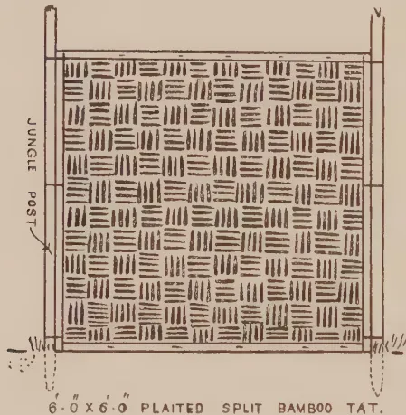
A diagram showing a single rectangular partition made of closely plaited bamboo tats. It is supported by two vertical 'JUNGLE POST' on the left and right sides. The partition is labeled '6' 0" x 6' 0" PLAITED SPLIT BAMBOO TAT.'
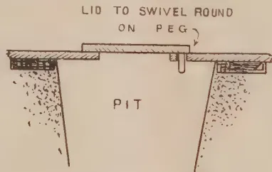
A cross-sectional diagram of the pit latrine. It shows a rectangular pit dug into the earth. A lid is shown resting on a 'PEG' which is driven into the earth. The lid is labeled 'LID TO SWIVEL ROUND ON PEG'. The pit itself is labeled 'PIT'.
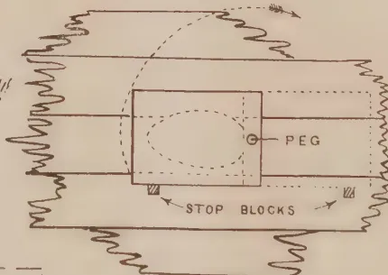
A diagram showing the swivel lid from both a section and a plan view. The section view shows the lid resting on a 'PEG' which is driven into the earth. The plan view shows the lid as a rectangle with a circular swivel hole in the center. The lid is labeled 'PEG' and 'STOP BLOCKS' are shown at the corners of the lid. The diagram is labeled 'SECTION & PLAN SHEWING SWIVEL LID.'
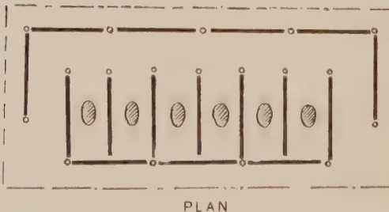
A plan view diagram of the latrine structure. It shows a rectangular frame with six compartments. Each compartment is formed by a vertical partition and a horizontal top and bottom. The partitions are labeled 'TATS'. The diagram is labeled 'PLAN'.
SHEWING 16 TATS IN POSITION - 6 COMPARTMENTS
resting on earth. Tats are fixed to jungle posts and the whole structure can be removed and re-erected in a few hours if necessary. Squatting holes but have lids which swivel round on a wooden peg in a hole. The lid can be kicked round by a cooly and a wooden block stops it. The advantage being that the cooly has not to hold up the lid which may be soiled underneath, there are no hinges to break, and lids can be lifted off and washed if required.
C. D. ARMSTRONG.
JULY, 1917.]
55
METEOROLOGICAL.
JUNE, 1917.
| Station. | Temperature | Mean Humidity % | Mean amount of cloud 0=Clear, 10=Overcast |
Mean Wind direction during month | Daily mean Velocity Miles | Rainfall | |||
|---|---|---|---|---|---|---|---|---|---|
| Mean Daily Shade | Difference from average | Amount Inches | No. of Rainy days | Difference from average | |||||
| Colombo | 81.0 | -0.7 | 83 | 7.4 | SW | 142 | 5.41 | 20 | 2.77 |
| Observatory | - | - | - | - | - | - | - | - | - |
| Puttalam | 82.5 | +0.4 | 79 | 6.0 | SW | 247 | 0.56 | 2 | 1.23 |
| Mannar | 84.6 | -0.1 | 73 | 8.3 | SW | 200 | 0.39 | 1 | 0.22 |
| Jaffna | 84.0 | +0.1 | 78 | 4.5 | SW | 347 | 0.00 | 0 | 0.68 |
| Trinco'mee | 85.4 | -0.1 | 64 | 7.1 | WSW | 277 | 1.05 | 3 | 0.25 |
| Batticaloa | 83.8 | -1.4 | 72 | 4.9 | SSE | 96 | 2.57 | 2 | +1.63 |
| Hambantota | 81.1 | -0.5 | 82 | 5.8 | SW | 363 | 2.04 | 11 | -0.31 |
| Galle | 79.9 | -0.7 | 85 | 8.0 | WNW | 235 | 6.52 | 22 | -1.66 |
| Ratnapura | 79.6 | -1.1 | 83 | 7.6 | — | — | 15.93 | 22 | 4.14 |
| Anu pura | 83.0 | -0.7 | 72 | 7.6 | — | — | 0.34 | 2 | -1.10 |
| Kurunegala | 80.3 | -0.6 | 76 | 8.8 | — | — | 6.47 | 17 | -1.93 |
| Kandy | 76.2 | -0.4 | 76 | 8.1 | — | — | 9.58 | 21 | +0.16 |
| Badulla | 74.4 | -1.2 | 74 | 6.8 | — | — | 1.24 | 7 | -1.10 |
| Diyatalawa | 70.5 | -0.1 | 64 | 7.5 | — | — | 3.02 | 11 | +1.04 |
| Hakgala | 62.0 | 0.0 | 82 | 7.8 | — | — | 6.83 | 20 | -1.02 |
| N'Eliya | 61.2 | +1.3 | 84 | 9.3 | — | — | 11.79 | 21 | -1.16 |
The rainfall for the month was in deficit over the greater part of the Island. This deficit ranged from between five to ten inches in the South-west to about an inch in the North, North-east and South-east. The rainfall only exceeded the normal in a few scattered places, and this excess was nowhere as great as two inches. The number of days on which rain fell was also less than the average.
The wind was, on the whole, from the South-west.
The mean temperature, in spite of the deficient rainfall, was distinctly in deficit throughout the Island.
Up-country and Centrally the sky was clouded to an extent above, and in the coastal districts below, the average.
J. E. EVANS,
Acting Director, Colombo Observatory.
ANIMAL DISEASE RETURN FOR THE MONTH ENDED 30th JUNE, 1917.
| Province. | Disease. | No. of cases to date since Jan 1st, 1917. | Balance remaining end of preceding week. | Fresh cases during the month | Recoveries. | Deaths | Bal- ance ill. | No. shot. |
|---|---|---|---|---|---|---|---|---|
| Western | Rinderpest | 73 | — | 10 | 11 | 61 | 1 | — |
| Foot & mouth disease- | 669 | 9 | 32 | 663 | — | 6 | — | |
| Colombo Municipality | Rinderpest | 263 | — | 82 | — | — | — | — |
| Foot & mouth disease- | 5 | — | — | — | — | — | — | |
| Quarantine Station | Rinderpest | 325 | — | 7 | — | — | — | — |
| Foot & mouth disease- | 119 | — | — | — | — | — | — | |
| Central | Rabies amongst dogs is prevalent in | 10 | — | — | — | — | — | — |
| Rinderpest | 23 | — | 7 | 14 | — | 2 | — | |
| Northern | Anthrax | 2 | — | — | — | — | — | — |
| Foot & mouth disease- | 157 | 15 | 40 | 143 | — | 14 | — | |
| North-Western | Foot & mouth disease- | 132 | — | — | — | — | — | — |
| Rabies (dogs) | 22 | — | — | — | — | — | — | |
| Eastern | Foot & mouth disease- | 1 | 22 | — | — | — | — | — |
| Rabies (dogs) | 928 | — | 253 | 900 | 1 | 26 | 1 | |
| Sabaragamuwa | Foot & mouth disease- | 9 | — | — | 2 | 7 | — | — |
| Rabies (dogs) | 423 | — | 6 | 407 | 10 | 6 | — | |
| Uva | Foot & mouth disease- | 451 | 45 | 158 | 435 | — | 16 | — |
| Rabies (dogs) | 1 | — | — | — | 1 | — | — | |
| North-Central | Rinderpest | 8 | — | — | 1 | 4 | — | 3 |
| Foot & mouth disease- | 670 | 15 | 138 | 591 | 27 | 52 | — | |
| Southern | Foot & mouth disease- | 354 | 43 | 89 | 261 | 4 | 89 | — |
| Rabies (dogs) | 17 | 6 | 17 | — | — | 17 | — |
G. W. STURGESS, G.V.S.
56[JULY, 1917.(From Lewis & Peal's Latest Monthly Prices Current.)
| QUALITY. | Quotations. | QUALITY. | Quotations. | ||||
|---|---|---|---|---|---|---|---|
| ALOES, Socotrine cwt. | Fair to fine | 90/ a 95/ | NUTMEGS, lb. | 64's to 57's | 1/9 a 2/ | ||
| Zanzibar & Hepatic | Common to good | 40/ a 95/ | Singapore & Penang | 80's | 1/5 | ||
| ARROWROOT (Natal) lb. | Fair to fine | 6d a 7d | 110's | 1/ | |||
| BEES WAX cwt. | |||||||
| Zanzibar Yellow | Slightly drossy to good | £10 a £10 5/ | NUX VOMICA; Cochin | Ordinary to good | 35/ a 40/ | ||
| East Indian bleached | Fair to good | £10 5/ a £10 10/ | per cwt. Bengal | " " | 28/ a 30/ | ||
| unbleached | Dark to good genuine | £8 15/ a £9 5/ | Madras | " " | 30/ a 35/ | ||
| Madagascar | Dark to good palish | £9 15/ a £10 5/ | OIL OF ANISEED lb. | Fair merchantable | 3 4 1/2 | ||
| CAMPHOR, Japan lb. | Refined | 3/ a 3/6 | CASSIA | According to analysis | 4 2 a 4/5 | ||
| China cwt. | Fair average quality | 170/ nom. | LEMONGRASS oz. | Good flavour & colour | 3d | ||
| CARDAMOMS, Tumericin | Good to fine bold | 3/6 a 4/6 nom. | NUTMEG | Dingy to white | 1 1/2 a 1 3/4 | ||
| Malabar, Tellicherry | Middling lean | 2/ a 2/9 | CINNAMON (Ceylon) | Ordinary to fair sweet | 5 1/2 a 2s | ||
| Calicut | Good to fine bold | 3/ a 4/ | CITRONELLE lb. | Bright & good flavour | 1/9 | ||
| Mangalore | Brownish | 1/9 a 2/6 | OLIBANUM, drop | Good to fine white | 120/ a 150/ | ||
| Ceylon, Mysore | Med Brown to good bold | 2/6 a 5/4 | pickings | Middling to fair | 90/ a 110/ | ||
| Malabar | Small fair to fine plump | 1/9 a 4/6 | sittings | Low to good pale | 22/6 a 40/ | ||
| Seeds, E. I. & Ceylon | Fair to good | 1/7 a 1/8 | ORCHELLA WEED—cwt | Slightly foul to fine | 35/ a 50/ | ||
| Ceylon "Long Wild" | Fair to good | 1/9 a 2/ | Ceylon | Fair | 10/6 | ||
| CHILLIES, Zanzibar cwt. | Shelly to good | 1/ a 1/6 | Madagascar | Fair | 10/6 | ||
| Japan | Dull to fine bright | 75/ a 80/ | Zanzibar | Fair | 10/6 | ||
| CINCHONA BARK.—lb. | Fair bright small | 70/ a 85/ | PEPPER—(Black) lb. | Fair | 1 1/2d | ||
| Ceylon | Crown, Renewed | 3 1/2d a 7d | Alleppy & Tellicherry | Fair | 11d a 11 1/2d | ||
| Red, Org. Stem | 2d a 6d | Ceylon | Fair | 10 1/2d | |||
| Red, Org. Stem | 1 3/4d a 4 1/4d | Singapore | Fair | 10 3/4d | |||
| Red, Renewed | 3d a 5 1/2d | Acheen & W. C. Penang | Dull to fine | 10 1/2d a 11d | |||
| CINNAMON, Ceylon 1sts. | Fair to fine quill | 1/ a 1/6 | (White) Singapore | Fair to fine | 1/ | ||
| per lb. | " " | 1d a 1/5 | Siam | Fair | 1/ | ||
| 2nds. | " " | 10d a 1/3 | Penang | Fair | none | ||
| 3rds. | " " | 9d a 1/ | Muntok | Fair | 1/0 1/2 a 1/1 | ||
| 4ths. | " " | 5d a 5 1/2d | Shenzi | Ordinary to good | 1/4 a 3/ | ||
| Chips. | Fair to fine bold | 1/2 a 1/4 | Canton | Ordinary to good | 1/3 a 2/3 | ||
| CLOVES, Penang lb. | Dull to fine bright pkd. | 10 1/2d a 11d | High Dried | Fair to fine flat | 1/6 a 1/8 | ||
| Amboyna | Dull to fine | 10 1/2d a 10 1/2d | |||||
| Zanzibar | Fair and fine bright | 10 1/2d | RUBBER, INDIA lb. | Standard smoked sheets | 2 8 1/2 | ||
| Madagascar | Fair | 10 1/2d | Ceylon, Straits, etc. | Standard Crepe | 2 8 1/2 | ||
| Stems | Fair | 3 1/2d | Assam | Scrap fair to fine | 1/10 | ||
| COFFEE | Medium to bold | Nominal | Rangoon | Fair 11 to ord. red No. 1 | 1/4 | ||
| Ceylon Plantation cwt. | Fair to bold | 83/ a 85/ | Borneo | " " | 1/0 | ||
| Liberian | Special Marks | 70/ a 82/ | Java | Common to good | 1/0 | ||
| COCOA, Ceylon Plant. | Red to good | 30/ a 70/ | Penang | Good to fine red | 8 a 2/ | ||
| Native Estate | Ordinary to red | 30/ a 96/ | Mozambique | Low white to prime red | 1/6 a 1/9 | ||
| Java | Small to good red | 65/ a 75/ | Nyassaland | Sausage, fair to good | 1/6 a 2/ | ||
| COLOMBO ROOT | Middling to good | 42/6 a 47/6 | Madagascar | Fair to fine ball | 1/4 a 1/7 | ||
| CROTON SEEDS, sifted | Dull to fair | £15 a £16/ | Fr. to fine pinky & white | 1/ | |||
| CUBES | Ord. stalky to good | 10d a 11d | New Guinea | Majunga & blk coated | 9d a 1/6 | ||
| FIBRE, Kitul | OO good long | 8d | Niggers, low to good | 1/6 a 2/ | |||
| OO medium | 7d | SAGO, PEARL, large—cwt | Fair to fine | 65/ a 67/6 | |||
| Palmyrah | No. 1 fair | £30/ a £35 nom. | medium | " " | 60/ a 65/ | ||
| Common to fair | £40/ a £45 | small | " " | 60/ a 65/ | |||
| Medium to good | £50/ a £60 | Flour | " " | 44/ a 45 | |||
| GINGER, Bengal, rough | Good to fine | 62/6 | SEEDLAC | Good pinky to white | 175/ a 200/ nom. | ||
| Calicut, Cut A | Fair | 95/ a 100/ | cwt. | Ordinary to gd. soluble | 9d/ a 11/ | ||
| B & C | Medium to fine bold | 85/ a 90/ | lb. | Good to fine bold green | 3 1/2d a 8d | ||
| Cochin, Rough | Small and medium | 67/6 a 72/6 | SENNA, Tinnevelly | Fair greenish | 3d a 4 1/2d | ||
| Japan | Common to fine bold | 67/6 | Common specky & small | ||||
| Ammoniacum | Small and D's | 42/6 | SHELLS, M. of PEARL— | ||||
| Animi, Zanzibar | Unspilt | 60/s a 85/s | Egyptian cwt. | Small to bold | 40/ a £5 10/ | ||
| Ord. blocky to fair clean | £14 10/ a £16 10/ | Bombay | " " | 55/ a £5 15/ | |||
| Pale and amber, str. srts | £11 a £12 | Mergui | Chicken to bold | £6 15/ a £10 | |||
| " " little red | £8 10/ a £10 10 | Manilla | " " | £6 a £10/ | |||
| Bean and Pea size ditto | 70/ a £11 | Banda | Sorts | 40/ a 45/ | |||
| Madagascar | Fair to good red sorts | £8 10/ a £10 10 | Green Snail | Small to large | 50/ a 75/ | ||
| Med. and bold glassy sorts | £5 10/ a £7 5/ | TAMARINDS, Calcutta... | Mid to fine bl'k not stony | 35/ a 37/6 | |||
| Arabic, E. I. & Aden | Fair to good palish | £4 a £8 | per cwt. Madras | Inferior to good | 20/ a 25/ | ||
| Turkey sorts | " " red | £4 a £7 | TORTOISE SHELL— | ||||
| Ghatti | Ordinary to good pale | 45/ a 50/ nom. | Zanzibar & Bombay lb. | Small to bold | 10/ a 25/ | ||
| Kurrachee | " " | 62/6 a 65/ | Ceylon | Pickings | 5/ a 15/ | ||
| Madras | Sorts to fine pale | 22/6 a 35/ | Turmeric, Bengal cwt. | Small to bold | 10/ a 20 | ||
| Assafoetida | Reddish to good pale | 25/ a 35/ nom. | Madras | Fair | 42/6 | ||
| Dark to fine pale | 20/ a 32/6 nom. | Do. | Finger fair to fine bold | 42/6 a 45/ | |||
| INDIGO, E. I. Bengal lb. | Clean fr. to gd. almonds | £15 a £20 | Cochin | Bulbs " " [bright | 37/6 nom. | ||
| com. stony to good block | £4 a £10 | Vanilloes—lb. | Finger fair | 40/ nom. | |||
| Shipping mid to gd. violet | 13/ a 14/ | Mauritius | Bulbs | 35/ | |||
| Consuming mid. to gd. | 12/ a 13/ | Madagascar | Gd. crystallized 3 1/2 a 8 1/2 in. | 5/6 a 9/6 | |||
| Ordinary to middling | 11/6 a 12/6 | Seychelles | Foxy & reddish 3 1/2 a " | 5/ a 7/ | |||
| Mid. to fine Kurpah | 8/6 a 10/ | Lean and inferior | 5/ a 5/9 | ||||
| Low to ordinary | 6/ a 7/9 | WAX, Japan, squares, cwt. | Good white hard | 75/ | |||
| KAPOK-Ceylon lb. | Mid. to fine Madras | 4/ a 5/ | |||||
| KINO lb. | Ordinary to good | 1/ a 1/3 | |||||
| MYRRH, Aden sorts cwt. | Fair to fine bright | 6d a 1/5 | |||||
| Somali | Middling to good | 160/ a 190/ | |||||
| MACE, Bombay & Penang per lb. | " " | 130/ a 150/ | |||||
| Java | Pale reddish to fine | 1/10 a 2/ | |||||
| Bombay | Ordinary to fair | 1/8 a 1/9 | |||||
| " " good pale | 1/10 a 2/4 | ||||||
| Wild | 5d | ||||||
With Special Reference to Ceylon,
By H. F. MACMILLAN, F.L.S.,
Superintendent of Botanic Gardens, Ceylon.
About 300 Illustrations. Demy 8vo. 32 Chapters.
| I. Climate, Soils, &c. | XXI. Railway Rest-house and School Gardens; Memorial trees; Plants for Cemeteries &c |
| II. Plant-life, nutrition, &c. | XXII. Standard products of Ceylon, Tea, Coconuts, Rubber, Cacao, Rice, Cardamoms, Tobacco, &c. |
| III. Manures, natural and artificial Green-manuring, mulching, inter-cropping, &c. | XXIII. Minor Products of Ceylon (Arecanuts, Annatto, Camphor, Cinchona, Citronella, Coca, Coffee, Cotton, Croton-oil, Kola-nut, Nux-vomica, Palmyrah, Sugar-cane, &c. |
| IV. Soil operations: Tillage, rotation of crops, &c. | XXIV. Miscellaneous Economic Products of the Tropics: Edible products, Drugs, Oils, Dyes, Fibres, Guttahs, Tannins, Vegetable-wax, &c. |
| V. Propagation; grafting, budding, &c. | XXV. Perfume-yielding plants; honey plants; Ornamental seeds; curious fruits; poisons, &c. |
| VI. Cultural operations: Planting, transplanting, shading, pruning, ring-barking, &c. | XXVI. Pasture, grazing, fodder plants, Edible Herbs and flowers; medicinal plants. |
| VII. Garden and estate tools and implements. | XXVII. Garden and Estate enemies and friends; weeds, &c. |
| IX. Laying out gardens: choice of site, preparation of ground, paths, borders, lawns, pot-plants, verandah gardening, &c. | XXVIII. Insect pests, and termites. Insecticides, Fumigation, &c. |
| X. Tropical fruits. | XXIX. Fungus diseases, preventive measures, fungicides. Spraying, &c. |
| XI. Sub-tropical or Temperate fruits. | XXX. Transport and packing of plants, seeds, bulbs, flowers, &c. Storing of seeds. |
| XII. Tropical Vegetables or Food-products. | XXXI. Useful references; measuring land, trees, timber, &c. Recipes for jams, jellies, &c. |
| XIII. Sub-Tropical or Temperate Vegetables. | XXXII. Calendars of work. |
| XIV. Spices of the tropics. | |
| XV. Flowering and ornamental foliage trees. | |
| XVI. Selections of foliage and flowering shrubs, climbers, palms, bamboos, &c., for low or medium elevations. | |
| XVII. Selections of pot-plants: Foliage and flowering pot-plants, Orchids, Ferns, &c. | |
| XVIII. Selections for medium or high elevations: Ornamental foliage & flowering trees, &c. | |
| XIX. Sand-binding plants, trees, &c., suited to the sea-side. | |
| XX. Shade trees for parks, field crops, Windbelts, Timber, &c. |
Price exclusive of Postage, Rs. 10, or 13s. 4d.
Send for Complete Synopsis of Contents to the Author or
Messrs. H. W. Cave & Co., Colombo, Ceylon.
*Postage in Ceylon, cts. 50; to India and Burma, As 14; to other countries, Is. 4d.
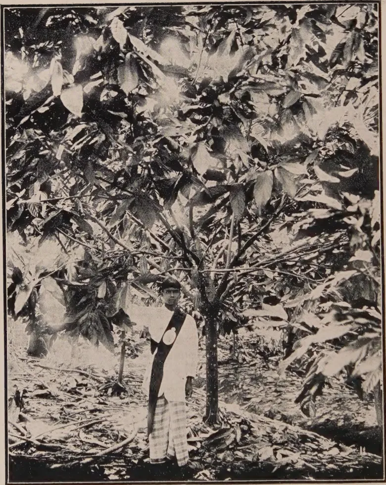
A black and white photograph showing a young cacao tree in a plant-breeding plot. A person stands next to the tree, wearing a light-colored shirt, dark trousers, and a dark sash with a circular emblem. The ground is covered with fallen leaves and debris.YOUNG CACAO IN PLANT-BREEDING PLOT.
Peradeniya Experiment Station.